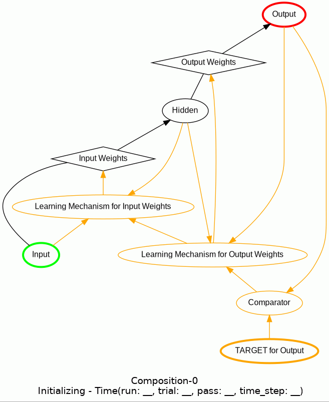

As of PsyNeuLink 0.7.5, the API for using Compositions for Learning has been slightly changed!
Please see this link for more details.
Composition is the base class for objects that combine PsyNeuLink Components into an executable model.
It defines a common set of attributes possessed, and methods used by all Composition objects.
Composition Nodes are Mechanisms and/or nested Compositions.
Projections connect pairs of Nodes. The Composition’s graph stores the
structural relationships among the Nodes of a Composition and the Projections that connect them. The Composition’s
scheduler generates an execution queue based on these structural dependencies, allowing for
other user-specified scheduling and termination conditions to be specified.
A Composition can be created by calling the constructor and specifying Components to be added, using
either arguments of the constructor and/or methods that allow Components to be added once it has been constructed.
Hint
Although Components (Nodes and Projections) can be added individually to a Composition, it is often easier to use
Pathways to construct a Composition, which in many cases can automaticially construct the
Projections needed without having to specify those explicitly.
The following arguments of the Composition’s constructor can be used to add Compnents when it is constructed:
nodes
adds the specified Nodes to the Composition; this is equivalent to constructing the
Composition and then calling its add_nodes method, and takes the same values as the
nodes argument of that method.
projections
adds the specified Projections to the Composition; this is equivalent to constructing the
Composition and then calling its add_projections method, and takes the same
values as the projections argument of that method.
pathways
adds one or more Pathways to the Composition; this is equivalent to constructing the
Composition and then calling its add_pathways method, and can use the same forms
of specification as the pathways argument of that method. If any learning Pathways are included, then the constructor’s disable_learning argument can be
used to disable learning on those by default (though it will still allow learning to occur on any other
Compositions, either nested within the current one, or within which the current one is nested (see
Learning in a Composition for a full description).
controller
adds the specified ControlMechanism (typically an OptimizationControlMechanism) as the controller of the Composition, that can be used to simulate and optimize performance of the
Composition. If this is specified, then the enable_controller, controller_mode,
controller_condition and retain_old_simulation_data can be used to configure the controller’s operation
(see Controlling a Composition for full description).
The methods used for adding individual Components and Pathways to a Composition are described
briefly below. Examples of their their use are provided in Creating a Composition.
The following methods can be used to add individual Components to an existing Composition:
adds one or more Pathways to the Composition; this a convenience method, that determines the type of
each Pathway, and calls the relevant ones of the following methods for each Pathway.
adds and a list of Nodes and Projections to the Composition,
inserting a default Projection between any adjacent pair of Nodes for which one is not otherwise specified
(or possibly a set of Projections if either Node is a Composition – see method documentation for details);
returns the Pathway added to the Composition.
Only Mechanisms and Projections added to a Composition using the methods above belong to a Composition, even if
other Mechanism and/or Projections are constructed in the same Python script.
A Node can be removed from a Composition using the remove_node method.
A Composition can be used as a Node of another Composition, either in the nodes argument
of its consructor, in a Pathway specified in its pathways argument, or in one of the Composition’s addition
methods. Projections can be specifed to and from the nested composition (or
created automatically if specified in a Pathway) just as for any other Node.
This section provides an overview of the structure of a Composition and its Components. Later sections
describe these in greater detail, and how they are used to implement various forms of Composition.
The structure of a Composition is a computational graph, the Nodes of which are Mechanisms and/or nested Composition(s) that carry out computations; and the edges of which
can be thought of as Composition’s Projections, that transmit the computational results from one Node
to another Node (though see below for a fuller description). The information about a
Composition’s structure is stored in its graph attribute, that is a Graph object describing
its Nodes and the dependencies determined by its Projections. There are no restrictions on the structure of the
graph, which can be acyclic or cyclic, and/or hierarchical (i.e., contain one or more
nested Compositions) as described below. A Composition’s graph can be
displayed using the Composition’s show_graph method (see Use of the show_graph Method).
Projections are always directed (that is, information is transimtted in only one direction). Therefore, if the
Projections among the Nodes of the Composition never form a loop, then it is a directed acyclic graph (DAG), and the order in which its Nodes are executed can be determined by
the structure of the graph itself. However if the Composition contains loops, then its structure is a cyclic graph, and how the Nodes in the loop are initialized and the order in which
they execute must be determined in order to execute the graph. PsyNeuLink has procedures both for automatically
detecting handling such cycles, and also for allowing the user to specify how this is done (see
Cycles and Feedback).
Every Node in a Composition’s graph must be either a Mechanism or a nested Composition. The Nodes of a Composition’s graph are listed in its nodes attribute.
Each Node is assigned one or more NodeRoles that designate its status in the graph. Nodes are assigned
one or more NodeRoles automatically when a Composition is constructed, and when Nodes or Pathways are added to it or new Projections are assigned to it. However, some of these
can be explicitly assigned by specifying the desired NodeRole in any of the following places:
the required_roles argument of the Composition’s add_node or add_nodes methods;
a tuple specifying the Node in the pathways argument of the Composition’s constructor, a Pathway's
constructor, or in one of the methods used to add a Pathway to the Composition
(see Creating a Composition); the Node must be the first item of the tuple, and the NodeRole its 2nd item.
the roles argument of the require_node_roles called for an existing Node.
For example, by default, the ORIGIN Nodes of a Composition are assigned as its INPUT nodes (that is, ones that
receive the external input when it is run), and similarly its
TERMINAL Nodes are assigned as its OUTPUT Nodes (the values of which are reported as the results of running the Composition). However, any other Nodes can be specified as the INPUT or
OUTPUT Nodes using the methods above, in addition to those assigned by default. It is also possible to exclude some
roles from being assigned by default, using the exclude_node_roles method. The
description of each NodeRole indicates whether it is modifiable using these methods. All of the roles assigned
to a particular Node can be listed using the get_roles_by_node method, and all of the
nodes assigned a particular role can be listed using the get_nodes_by_role method.
A nested Composition is one that is a Node within another Composition. When the outer
Composition is executed, the nested Composition is executed when its Node in the outer
is called to execute by the outer Composition’s scheduler. Any depth of nesting of
Compositions withinothers is allowed.
Projections to Nodes in a nested Composition. Any Node within an outer Composition can send a Projection to any INPUT Node of any Composition that is enclosed within it (i.e., at any level
of nesting). In addition, a ControlMechanism within an outer Composition can modulate the parameter (i.e.,
send a ControlProjection to the ParameterPort) of anyMechanism in a Composition nested within it,
not just its INPUT Nodes.
Projections from Nodes in a nested Composition. The nodes of an outer Composition can also receive Projections
from Nodes within a nested Composition. This is true for any OUTPUT of the nested Composition,
and it is also true for any of its other Nodes if allow_probes is True (the default);
if it is CONTROL, then only the controller of a Composition can receive Projections
from Nodes in a nested Composition that are not OUTPUT Nodes.
Probes – Nodes that are not OUTPUT of a nested Composition but project to ones in an
outer Composition are assigned PROBE in addition to their other roles in the
nested Composition. The only difference between PROBE and OUTPUT Nodes
is whether their output is included in the output_values and results attributes of the outermost Composition to which they project; this is determined by the
include_probes_in_output attribute of the latter. If
include_probes_in_output is False (the default), then the output of any
PROBE Nodes in any Composition nested within it are not included in
the output_values or results for the Composition to which
they project. In this respect, they can be thought of as “probing” - that is, providing access to “latent variables”
of – the Composition to which they belong – the values of which that are not otherwise reported as part of the
Composition’s output or results. If include_probes_in_output is True,
then any PROBE Nodes of any nested Compositions are treated the same as OUTPUT
Nodes: their outputs are included in the output_values and results of that Composition.
Note
The specification of include_probes_in_output only applies to a
Composition that is not nested in another. At present, specification of the attribute for nested
Compositions is not supported: the include_probes_in_output argument in the constructor
for nested Compositions is ignored, and the attribute is automatically set to True.
This is because Compositions require access to the values of all of the output_CIM of any Compositions
nested within them (see below).
Inputs for nested Compositions. If a nested Composition is an INPUT Node of all of the Compositions within
which it is nested, including the outermost one, then when the latter is executed,
the inputs specified to its execution method must
include the InputPorts of the nested Composition. These can be accessed using the Composition’s exernal_input_ports attribute.
Results from nested Compositions. If a nested Composition is an OUTPUT Node of all of the Compositions within
which it is nested, including the outermost one, then when the latter is executed,
both the output_values and results of the nested Composition
are also included in those attributes of any intervening and the outermost Composition. If allow_probes is set, then the Composition’s include_probes_in_output attribute determines whether their values are also included in the
output_values and results of the outermost Composition
(see above).
Learning in nested Compositions. A nested Composition can also contain one or more learning Pathways, however a learning Pathway may not extend from an enclosing Composition
to one nested within it or vice versa. The learning Pathways within a nested Composition are executed
when that Composition is run, just like any other (see Execution of Learning).
Every Composition has three CompositionInterfaceMechanisms, described below,
that act as interfaces between it and the environment, or other Components if it is nested
within another Composition. The CompositionInterfaceMechanisms of a Composition are created and assigned to it
automatically when the Composition is constructed, and executed automatically when it executes (they should never
be constructed or executed on their own).
input_CIM - this is assigned an InputPort and OutputPort for every INPUTNode of the Composition to which it belongs. The InputPorts receive input
from either the environment or a Composition within which it is nested. If the Composition is itself an
INPUT Node of an enclosing Composition, then its input must be included in the inputs to that Composition when it is executed. Every InputPort
of an input_CIM is associated with an OutputPort that projects to a corresponding INPUT Node
of the Composition.
parameter_CIM - this is assigned an InputPort and OutputPort for every
Parameter of every Node of the Composition that is modulated
by a ModulatoryMechanism (usually a ControlMechanism) outside of the Composition (i.e., from an enclosing
Composition within which it is nested). The InputPort receives a Projection from a
ModulatorySignal on the ModulatoryMechanism, and the paired OutputPort of the parameter_CIM conveys this via
ModulatoryProjection to the ParameterPort for the Paremeter of the Mechanism to be modulated.
The Projection from a ModulatoryMechanism to the InputPort of a parameter_CIM is the only instance in which a
MappingProjection is used as an efferentprojection of a ModulatoryMechanism.
output_CIM - this is assigned an InputPort and OutputPort for every OUTPUTNode of the Composition to which it belongs. Each InputPort receives input
from an OUTPUT Node of the Composition, and its value is assigned as the
value of a corresponding OutputPort. The latter are assigned to the output_values and results attributes of the Composition. If the Composition
is nested within another, then the output_CIM’s output_ports
send Projections to Components of the Composition within which it is nested. If it is an OUTPUT
Node of the enclosing Composition, then its OutputPorts project the output_CIM of the
enclosing Composition, its output_values are included in those of the enclosing
Composition. If the Composition has an PROBE Nodes, then they too project to the Composition’s
output_CIM. If the Composition is nested in another, then the values of the PROBE Nodes are also included in the Composition’s output_values; if it
is an outer Composition (i.e. not nested in any other), then the Compositions’ include_probes_in_output attribute determines whether their values are included in its output_values and results attributes (see Probes for
additional details).
Projections can be thought of as directed edges of the Composition’s graph,
insofar as they are always from one Node to a single other Node, and serve to convey the results of the sender’s
computation as input to the receiver. However, they are not edges in the strictest senese, for two reasons:
First, they too can carry out (restricted) computations, such as matrix transformation by a MappingProjection.
Second, they can be the receiver of a Projection, as in the case of a MappingProjection that receives a
LearningProjection used to modify its matrix parameter. Nevertheless, since they
define the connections and therefore dependencies among the Composition’s Nodes, they determine the structure of its
graph. Subsets of Nodes connected by Projections can be defined as a Pathway as decribed under
Pathways below).
Because Projections are not strictly edges, they are assigned to vertices in the Composition’s
graph, along with its Nodes. The actual edges are implicit in the dependencies determined
by the Projections, and listed in the graph’s dependency_dict.
Although individual Projections are directed, pairs of Nodes can be connected with Projections in each direction
(forming a local cycle), and the AutoAssociativeProjection class of Projection can even
connect a Node with itself. Projections can also connect the Node(s) of a Composition to one(s) nested within
it. In general, these are to the INPUT Nodes and from the OUTPUT Nodes of a nested Composition, but if the Composition’s allow_probes attribute is not False, then Projections can be received from any Nodes within a nested
Composition (see Probes for additional details). A ControlMechanism can also control (i.e.,
send a ControlProjection) to any Node within a nested Composition.
Projections can be specified between Mechanisms before they are added to a Composition. If both
Mechanisms are later added to the same Composition, and the Projection between them is legal for the Composition,
then the Projection between them is added to it and is used during its execution.
However, if the Projection is not legal for the Composition (e.g., the Mechanisms are not assigned as INTERNALNodes of two different nested Compositions),
the Projection will still be associated with the two Mechanisms (i.e., listed in their afferents and efferents attributes, respectively), but it is not
added to the Composition and not used during its execution.
Hint
Projections that are associated with the Nodes of a Composition but are not in the
Composition itself (and, accordingly, not listed it is projections attribute)
can still be visualized using the Composition’s show_graph method, by specifying its
show_projections_not_in_composition argument as True; Projections not in the Composition appear in red.
Although Projections can be specified to and from Nodes within a nested Composition, these are actually
implemented as Projections to or from the nested Composition’s input_CIM,
parameter_CIM or output_CIM, respectively;
those, in turn, send or receive Projections to or from the specified Nodes within the nested Composition.
PROBE Nodes of a nested Composition, like OUTPUT Nodes,
project to the Node of an enclosing Composition via the nested Composition’s output_CIM, and those of any intervening Compositions if it is nested more than one level deep.
The outputs of PROBE Nodes are included in the output_values and
results of such intervening Compositions (since those values are derived from the
output_ports of the Composition’s output_CIM.
Specifying include_probes_in_output has no effect on this behavior
for intervening Compositions; it only applies to the outermost Composition to which a PROBE Node projects
(see Probes for additional details).
A Pathway is an alternating sequence of Nodes and Projections in a Composition.
Although a Composition is not required to have any Pathways, these are useful for constructing Compositions, and are
required for implementing learning in a Composition. Pathways can be specified in the
pathways argument of the Composition’s constructor, or using one of its Pathway addition methods. Pathways must be linear (that is, the cannot have branches), but they can be
continguous, overlapping, intersecting, or disjoint, and can have one degree of converging and/or diverging branches
(meaning that their branches can’t branch). Each Pathway has a name (that can be assigned when it is constructed) and
a set of attributes, including a pathway attribute that lists the Nodes and Projections in the
Pathway, a roles attribute that lists the PathwayRoles assigned to it (based on
the NodeRoles assigned to its Nodes), and attributes for particular types of nodes (e.g., INPUT and
OUTPUT) if the Pathway includes nodes assigned the corresponding NodeRoles. If a Pathway does not have
a particular type of Node, then its attribute returns None. There are
two types of Pathways: processing Pathways and learning Pathways. Processing
Pathways are ones not configured for learning; learning Pathways are described under Learning in a Composition. All
of the Pathways in a Composition are listed in its pathways attribute.
A Composition can be assigned a controller. This must be an OptimizationControlMechanism,
or a subclass of one, that modulates the parameters of Components within the Composition (including Components of
nested Compositions). It typically does this based on the output of an ObjectiveMechanism that evaluates the value
of other Mechanisms in the Composition, and provides the result to the controller.
The controller is executed only if the Composition’s enable_controller attribute is True. This is generally done automatically when the controller is
is assigned. If enabled, the controller is
executed either before or after all of the other Components in the Composition have been executed at a given
TimeScale, and if its specified Condition has been met, as determined by the
Composition’s controller_mode, controller_time_scale and controller_condition attributes. By
default, a controller is enabled, and executes after the rest of the Composition (controller_mode= AFTER) at the end of every trial (controller_time_scale= TimeScale.TRIAL and controller_condition
= Always()). However, controller_mode can be used to specify execution of the
controller before the Composition; controller_time_scale can be used to specify
execution at a particular TimeScale (that is at the beginning or end of every TIME_STEP,
PASS); and controller_condition can
be used to specify a particular Condition that must be satisified for the controller to execute. Arguments for all
three of these attributes can be specified in the Composition’s constructor, or programmatically after it is
constructed by assigning the desired value to the corresponding attribute.
Learning is used to modify the Projections between Mechanisms in a Composition. More specifically,
it modifies the matrix parameter of the MappingProjections within a
learning Pathway, which implements the conection weights (i.e., strengths of
associations between representations in the Mechanisms) within a Pathway. If learning is implemented for a
Composition, it can be executed calling the Composition’s learn method (see
Execution of Learning and Executing a Composition for additional details).
The advantage of using standard PsyNeuLink compoments is that it assigns each operation involved in learning to a
dedicated Component. This helps make clear exactly what those operations are, the sequence in which they are carried
out, and how they interact with one another. However, this can also make execution inefficient, due to the overhead
incurred by distributing the calculations over different Components. If more efficient computation is critical,
then the AutodiffComposition can be used to execute a compatible PsyNeuLink Composition in PyTorch, or one or more
UserDefinedFunctions can be assigned to either PyTorch functions or those in any other Python
environment that implements learning and accepts and returns tensors. Each of these approaches is described in more
detail below.
When learning is implemented using standard PsyNeuLink Components, each calculation and/or operation involved in
learning – including those responsible for computing errors, and for using those errors to modify the Projections
between Mechanisms, is assigned to a different PsyNeuLink learning-related Component. These can be used to implement all types of learning. Learning is generally
considered to fall into two broad classes: unsupervised, in which connections weights are modified
by mere exposure to the inputs in order to capture structure and/or relationships among them; and supervised,
which in which the connection weights are modified so that each input generates a desired output (see
https://www.geeksforgeeks.org/supervised-unsupervised-learning/ for a useful summary). Both types of
learning can be implemented in a Composition, using LearningMechanisms that compute the
changes to make to the matrix parameter of MappingProjections
being learned, and LearningProjections that apply those changes to those MappingProjections.
In addition, supervised learning uses an ObjectiveMechanism – usually a ComparatorMechanism – to compute the error
between the response generated by the last Mechanism in a learning Pathway (to the
input provided to the first Mechanism in the Pathway) and the target stimulus used to specify the desired response.
In most cases, the LearningMechanisms, LearningProjections and, where needed, ObjectiveMechanism are generated
automatically, as described for each type of learning below. However, these can also be configured manually using
their constructors, or modified by assigning values to their attributes.
Undersupervised learning is implemented using a RecurrentTransferMechanism, setting its enable_learning argument
to True, and specifying the desired LearningFunction in its learning_function argument. The
default is Hebbian, however others can be specified (such as ContrastiveHebbian or Kohonen). When a
RecurrentTransferMechanism with learning enabled is added to a Composition, an AutoAssociativeLearningMechanism that
that is appropriate for the specified learning_function is automatically constructured and added to the Composition,
as is a LearningProjection from the AutoAssociativeLearningMechanism to the RecurrentTransferMechanism’s
recurrent_projection. When the Composition is run and the
RecurrentTransferMechanism is executed, its AutoAssociativeLearningMechanism is also executed, which updates the matrix of its recurrent_projection
in response to its input.
Supervised learning is implemented in a Composition by specifying a learning Pathway
in the pathways argumemt of the Composition’s constructor, its add_pathways method,
or one of its learning methods. If the constructor or add_pathways method is used,
then the Pathway specification must be the first item in a tuple, followed by a
LearningFunction as its 2nd item that specfies the type of learning. Alternatively, a learning Pathway can be added to a Composition by specifying the Pathway to be learned in the one
of the Composition’s learning methods, of which there are currently three:
A learning pathway is a contiguous sequence of ProcessingMechanisms and the
MappingProjections between them, in which supervised learning is used to modify the matrix parameter of the MappingProjections in the sequence, so that the
input to the first ProcessingMechanism in the sequence generates an output from the last ProcessingMechanism that
matches as closely as possible a target value specified as input in the Composition’s
learn method. The Mechanisms in the pathway must be compatible with learning (that is, their
function must be compatible with the function of the
LearningMechanism for the MappingProjections they receive (see Learning Function). The Composition’s
learning methods return a learning Pathway, in which its learning_components attribute is assigned a dict containing the set of learning components generated for
the Pathway, as described below.
For each learning pathway specified in the pathways argument of a Composition’s
constructor or one of its learning methods, it creates the following Components,
and assigns to them the NodeRoles indicated:
TARGET_MECHANISM – receives the desired value for the OUTPUT_MECHANISM, that is
used by the OBJECTIVE_MECHANISM as the target in computing the error signal (see above); that value must be
specified as an input to the TARGET_MECHANISM, either in the inputs argument of the Composition’s learn method, or in its targets argument in an entry for either the TARGET_MECHANISM or
the OUTPUT_MECHANISM (see below); the Mechanism is assigned
the NodeRolesTARGET and LEARNING in the Composition.
a MappingProjection that projects from the TARGET_MECHANISM to the TARGETInputPort of the OBJECTIVE_MECHANISM.
a MappingProjection that projects from the last ProcessingMechanism in the learning Pathway to the SAMPLEInputPort of the OBJECTIVE_MECHANISM.
OBJECTIVE_MECHANISM – usually a ComparatorMechanism, used to calculate an error signal for the sequence by comparing the value received by the ComparatorMechanism’s
SAMPLEInputPort (from the output of
the last Processing Mechanism in the learning Pathway) with the value received
in the OBJECTIVE_MECHANISM’s TARGETInputPort (from the TARGET_MECHANISM
generated by the method – see below); this is assigned the NodeRoleLEARNING in the Composition.
LEARNING_MECHANISMS – a LearningMechanism for each MappingProjection in the sequence, each of which
calculates the learning_signal used to modify the matrix parameter for the coresponding MappingProjection, along with a LearningSignal and
LearningProjection that convey the learning_signal to the
MappingProjection’s MATRIXParameterPort; depending on learning method,
additional MappingProjections may be created to and/or from the LearningMechanism – see
Learning Configurations for details); these are assigned the NodeRoleLEARNING in the
Composition.
LEARNING_FUNCTION – the LearningFunction used by each of the LEARNING_MECHANISMS in the learning pathway.
It also assigns the following item to the list of learning_components for the pathway:
OUTPUT_MECHANISM – the final Node in the learning Pathway, the target value for which is specified as input to the TARGET_MECHANISM; the Node is assigned
the NodeRolesOUTPUT in the Composition.
The items with names listed above are placed in a dict that is assigned to the learning_components attribute of the Pathway returned by the learning method used to create the Pathway;
they key for each item in the dict is the name of the item (as listed above), and the object(s) created of that type
are its value (see Single layer learning for a more detailed description and figure showing these
Components).
If the learning Pathway <Composition_Learning_Pathway>` involves more than two ProcessingMechanisms (e.g. using
add_backpropagation_learning_pathway for a multilayered neural network), then multiple LearningMechanisms are
created, along with MappingProjections that provide them with the error_signal
from the preceding LearningMechanism, and LearningProjections that modify the corresponding
MappingProjections (LEARNED_PROJECTIONs) in the learning Pathway, as shown for
an example in the figure below. These additional learning components are listed in the LEARNING_MECHANISMS and
LEARNED_PROJECTIONS entries of the dictionary assigned to the learning_components
attribute of the learning Pathway return by the learning method.
Figure: Supervised Learning Components
Components for supervised learning Pathway: the Pathway has three Mechanisms generated by a call to a supervised
learning method (e.g., add_backpropagation_learning_pathway(pathway=[A,B,C])),
with NodeRole assigned to each Node in the Composition’s graph (in
italics below Mechanism type) and the names of the learning components returned by the learning method (capitalized
and in italics, above each Mechanism).¶
The description above (and example >below) pertain to simple linear sequences.
However, more complex configurations, with convergent, divergent and/or intersecting sequences can be built using
multiple calls to the learning method (see example in Basics and Primer). In
each the learning method determines how the sequence to be added relates to any existing ones with which it abuts or
intersects, and automatically creates andconfigures the relevant learning components so that the error terms are
properly computed and propagated by each LearningMechanism to the next in the configuration. It is important to note
that, in doing so, the status of a Mechanism in the final configuration takes precedence over its status in any of
the individual sequences specified in the learning methods when building the
Composition. In particular, whereas ordinarily the last ProcessingMechanism of a sequence specified in a learning
method projects to a OBJECTIVE_MECHANISM, this may be superceded if multiple sequences are created. This is the
case if: i) the Mechanism is in a seqence that is contiguous (i.e., abuts or intersects) with others already in the
Composition, ii) the Mechanism appears in any of those other sequences and, iii) it is not the last Mechanism in
all of them; in that in that case, it will not project to a OBJECTIVE_MECHANISM (see figure below for an example). Furthermore, if it is the last Mechanism in all
of them (that is, all of the specified pathways converge on that Mechanism), only one OBJECTIVE_MECHANISM is created
for that Mechanism (i.e., not one for each sequence). Finally, it should be noted that, by default, learning components
are not assigned the NodeRole of OUTPUT even though they may be the TERMINAL Mechanism of a Composition;
conversely, even though the last Mechanism of a learning Pathway projects to an
OBJECTIVE_MECHANISM, and thus is not the TERMINALNode of a Composition, if it does not
project to any other Mechanisms in the Composition it is nevertheless assigned as an OUTPUT of the Composition. That
is, Mechanisms that would otherwise have been the TERMINAL Mechanism of a Composition preserve their role as an
OUTPUT Node of the Composition if they are part of a learning Pathway eventhough
they project to another Mechanism (the OBJECTIVE_MECHANISM) in the Composition.
OUTPUT vs. TERMINAL Roles in Learning Configuration
Configuration of Components generated by the creation of two intersecting learning Pathways (e.g., add_backpropagation_learning_pathway(pathway=[A,B]) and
add_backpropagation_learning_pathway(pathway=[D,B,C])). Mechanism B is the last Mechanism of the sequence
specified for the first pathway, and so would project to a ComparatorMechanism, and would be assigned as an
OUTPUTNode of the Composition, if that pathway was created on its own. However, since
Mechanims B is also in the middle of the sequence specified for the second pathway, it does not project to a
ComparatorMechanism, and is relegated to being an INTERNAL Node of the Composition Mechanism C is now the
one that projects to the ComparatorMechanism and assigned as the OUTPUT Node.¶
For learning to occur when a Composition is run, its learn method must be used instead of the
run method, and its disable_learning attribute must be False.
When the learn method is used, all Components unrelated to learning are executed in the same
way as with the run method. If the Composition has any nested Composition
that have learning Pathways, then learning also occurs on all of those for which
the disable_learning attribute is False. This is true even if the disable_learning attribute is True for which the Composition on which the learn
method was called.
When a Composition is run that contains one or more learning Pathways, all of the
ProcessingMechanisms for a pathway are executed first, and then its learning components. This is shown in an animation of the XOR network from the exampleabove:
Composition with Learning

Animation of XOR Composition in example above when it is executed by calling its learn
method with the argument animate={'show_learning':True}.¶
Note
Since the learning components are not executed until after the
processing components, the change to the weights of the MappingProjections in a learning pathway are not
made until after it has executed. Thus, as with execution of a Projection, those
changes will not be observed in the values of their matrix parameters until after
they are next executed (see Lazy Evaluation for an explanation of “lazy” updating).
AutodiffCompositions provide the ability to execute a composition using PyTorch (see example in Basics and Primer). The
AutodiffComposition constructor provides arguments for configuring the PyTorch implementation in various ways; the
Composition is then built using the same methods (e.g., add_node, add_projection, add_linear_processing_pathway,
etc.) as any other Composition. Note that there is no need to use any learning methods
— AutodiffCompositions automatically creates backpropagation learning pathways <Composition_Learning_Pathway>` between
all input - output Node paths. It can be run just as a standard Composition would - using learn for learning mode, and run for test mode.
The advantage of this approach is that it allows the Composition to be implemented in PsyNeuLink, while exploiting
the efficiency of execution in PyTorch (which can yield as much as three orders of magnitude improvement). However,
a disadvantage is that there are restrictions on the kinds of Compositions that be implemented in this way.
First, because it relies on PyTorch, it is best suited for use with supervised
learning, although it can be used for some forms of unsupervised learning that are supported in PyTorch (e.g., self-organized maps). Second, all of the Components in the Composition are be subject to and must
be with compatible with learning. This means that it cannot be used with a Composition that contains any
modulatory components or that are subject to modulation, whether by
ControlMechanisms within or outside the Composition; this includes a controller
or any LearningMechanisms. An AutodiffComposition can be nested in a Composition
that has such other Components. During learning, none of the internal Components of the AutodiffComposition (e.g.,
intermediate layers of a neural network model) are accessible to the other Components of the outer Composition,
(e.g., as sources of information, or for modulation). However, when learning turned off, then the AutodiffComposition
functions like any other, and all of its internal Components accessible to other Components of the outer Composition.
Thus, as long as access to its internal Components is not needed during learning, an AutodiffComposition can be
trained, and then used to execute the trained Composition like any other.
If execution efficiency is critical and the AutodiffComposition is too restrictive, a function from any Python
environment that supports learning can be assigned as the function of a Mechanism, in which case it is automatically wrapped as UserDefinedFunction. For example, the forward and
backward methods of a PyTorch object can be assigned in this
way. The advanatage of this approach is that it can be applied to any Python function that adheres to the requirements
of a UserDefinedFunction. It must be carefully coordinated with the execution of other learning-related Components in
the Composition, to insure that each function is called at the appropriate times during execution. Furthermore, as
with an AutodiffComposition, the internal constituents of the object (e.g., intermediates layers of a neural network
model) are not accessible to other Components in the Composition (e.g., as a source of information or for modulation).
There are three methods for executing a Composition:
run - executes one or more TRIALs without learning;
learn - executes one or more TRIALs with learning,
if the network is configured for learning.
execute - executes a single TRIAL without learning.
The run and learn methods are the most commonly used. Both of these
can execute multiple trials (specified in their num_trials argument), calling the Composition’s execute method for each TRIAL. The execute method
can also be called directly, but this is useful mostly for debugging.
Hint
Once a Composition has been constructed, it can be called directly. If it is called with no arguments, and
has executed previously, the result of the last TRIAL
of execution is returned; otherwise None is returned. If it is called with arguments, then either run or learn is called, based on the arguments provided: If the
Composition has any learning_pathways, and the relevant TARGET_MECHANISMs are specified in the inputs argument,
then learn is called; otherwise, run is called. In either case,
the return value of the corresponding method is returned.
Number of trials. If the the execute method is used, a single TRIAL is
executed; if the inputs specifies more than one TRIALs worth of input, an error is generated.
For the run and learn, the num_trials argument can be used to specify
an exact number of TRIALs to execute; if its value execeeds the number of inputs provided for
each Node in the inputs argument, then the inputs are recycled from the beginning of the lists, until the number
of TRIALs specified in num_trials has been executed. If num_trials is not specified,
then a number of TRIALs is executed equal to the number of inputs provided for each Node in inputs argument.
Learning. If a Composition is configured for learning then, for learning to occur,
its learn method must be used in place of the run method, and its
disable_learning attribute must be False (the default). A set of targets must also
be specified (see below). The run and execute
methods can also be used to execute a Composition that has been configured for learning,
but no learning will occur, irrespective of the value of the disable_learning
attribute.
The sections that follow describe the formats that can be used for inputs, factors that impact execution, and
how the results of execution are recorded and reported.
All methodsofexecuting method), which designates the values assigned
to the INPUT(and,forlearning,the`TARGET) Nodes <Composition_Nodes>`
of the Composition. These are provided to the Composition each time it is executed; that is, for each TRIAL. A TRIAL is defined as the opportunity for every Node in the Composition
to execute the current set of inputs. The inputs for each TRIAL can be specified using an input
dictionary; for the run and learn methods,
they can also be specified programmatically. Irrespective of format, the same
number of inputs must be specified for every INPUT Node, unless only one value is specified for a Node (in which
case that value is provided as the input to that Node for every TRIALs executed). If the
inputs argument is not specified for the run or execute methods,
the default_variable for each INPUT Node is used as its input on TRIAL.
If it is not specified for the learn method, an error is generated unless its targets
argument is specified (see below). The Composition’s get_input_format() method can be used to show a template for how inputs should be formatted for the
Composition, as well as the INPUT Nodes to which they are assigned. The formats are described in
more detail below.
using a dictionary, in which the inputs are specified or each TRIAL explicitly;
programmtically, using a function, generator or generator function
that constructs the inputs dynamically on a TRIAL by TRIAL basis.
The inputs argument of the run and learn methods (and the targets
argument of the learn method) can be specified in either way; however, only the dictionary
format can be used for the execute method, since it executes only one TRIAL at a time, and therefore can only accept inputs for asingle TRIAL.
Inputs and input_ports. All formats must specify the inputs to be assigned, on each TRIAL, to
the InputPorts of the Composition’s INPUTNodes that require external inputs. These are listed
in the external_input_ports attribute of the Composition’s INPUTMechanisms, and the corresponding attribute (external_input_ports)
of any nested Composition that is an INPUT Node of the Composition being executed
(see above). The format required can also be seen using the
get_input_format() method.
Note
Most Mechanisms have only a single InputPort, and thus require only a single input to be specified for them
for each TRIAL. However some Mechanisms have more than one InputPort (for example, a
ComparatorMechanism), in which case an input must be specified for each InputPort of that Mechanism. Conversely,
some Mechanisms have input_ports that are marked as internal_only (for example,
the input_port for a RecurrentTransferMechanism, if its has_recurrent_input_port is True), in which case no input should be specified for
that input_port. Similar considerations extend to the external_input_ports
of a nested Composition, based on the Mechanisms (and/or additionally nested Compositions)
that comprise its set of INPUTNodes.
The factors above determine the format of each entry in an inputs dictionary, or the
return value of the function or generator used for programmatic specification of
inputs, as described in detail below (also see examples).
The simplest way to specificy inputs (including targets for learning) is using a dict, in which each entry specifies
the inputs to a given INPUTNode. The key of each entry is a Node, and the value is a list of
the inputs to that Node, one for each TRIAL to be executed (i.e., the i-th item of the list
represents the input to the Node on TRIAL i). The same number of input values must be specified
in each entry, unless only a single input value is specified is in an entry, in which case that input is presented to
the corresonding Node in every TRIAL.
Example input dict specification, in which the first entry is for Mechanism a with one InputPort that takes
an array of length 2 as its input, and for which two TRIALs worth of input are specified
([1.0,2.0] and [3,0,4.0]); the second entry is for Mechanism b with two InputPorts, one of which
takes an array of length 1 as its input and the other an array of length 2, and for which two TRIALs worth of input are also specified ([[1.0],[2.0,3.0]] and [[4.0],[5.0,6.0]]);
and, finaly, a third entry is for Mechanism c with only one InputPort that takes an array of length 1 as its
input, and for which only one input is specified ([1.0]), which is therefore provided as the input to
Mechanism c on every TRIAL.¶
The key for each entry of the dict can be a direct reference to the Node, or the name assigned
to one (i.e., its name attribute). The value must an input that is compatible with the number of
InputPorts that receive external input for that Node. These are listed in its external_input_ports
(here if it is Mechanism, or here if it
is a Composition). More specifically, the shape of the input value must be compatible with the shape of the Node’s
external_input_values attribute (here if it is Mechanism, or here if it is a Composition). While these are always 2d arrays, the number and size
of the items (corresponding to each InputPort) may vary; in some case shorthand notations are allowed, as illustrated
in the examples below.
In general, the value of inputs should be numeric arrays; however, some Mechanisms have an input_labels_dict that specifies a mapping from strings (labels) to numeric values, in which those
strings can be used to specify inputs to that Mechanism (these are translated to their numeric values on execution).
However, such labels are specific to a given Mechanism; use of strings as input to a Mechanism that does not have an
input_labels_dict specified, or use of a string that is not listed in the
dictionary for that Mechanism generates and error.
For learning, inputs must also be specified for the TARGET_MECHANISM of each
learning Pathway in the Composition. This can be done in either the inputs
argument or targets argument of the learn method. If the inputs argument is used,
it must include an entry for each TARGET_MECHANISM; if the targets argument
is used, it must be assigned a dictionary containing entries in which the key is either an OUTPUT_MECHANISM (i.e., the final Node) of a learning Pathway, or the corresponding TARGET_MECHANISM. The
value of each entry specifies the inputs for each trial, formatted asdescribed above.
The input format required for a Composition, and the INPUT Nodes to which inputs are assigned,
can be seen using its get_input_format method.
Inputs can also be specified programmticaly, in a TRIAL by TRIAL manner,
using a function, generator, or generator function.
A function used as input must take as its sole argument the current TRIAL number and return a
value that satisfies all rules above for standard input specification. The only difference is that on each execution,
the function must return the input values for each INPUTNode for a single TRIAL.
Note
Default behavior when passing a function as input to a Composition is to execute for only one TRIAL. Remember to set the num_trials argument of Composition.run if you intend to cycle through
multiple TRIALs.
A generator can also be used as input. On each yield, it should return a value that satisfies all rules above for
standard input specification. The only difference is that on each execution, the generator must yield the input values
for each INPUTNode for a single TRIAL.
Note
Default behavior when passing a generator is to execute until the generator is exhausted. If the num_trials
argument of Composition.run is set, the Composition will execute EITHER until exhaustion, or until num_trials has
been reached - whichever comes first.
Complete input specification:
>>> importpsyneulinkaspnl>>> a=pnl.TransferMechanism(name='a',default_variable=[[1.0,2.0,3.0]])>>> b=pnl.TransferMechanism(name='b')>>> pathway1=[a,b]>>> comp=pnl.Composition(name='comp')>>> comp.add_linear_processing_pathway(pathway1)>>> defgenerator_as_input():... a_inputs=[[1.0,2.0,3.0],[4.0,5.0,6.0],[7.0,8.0,9.0]]... foriinrange(len(a_inputs)):... this_trials_inputs={a:a_inputs[i]}... yieldthis_trials_inputs>>> generator_instance=generator_as_input()>>> # Because the num_trials argument is set to 2, the below call to run will result in only 2 executions of... # comp, even though it would take three executions to exhaust the generator.>>> comp.run(inputs=generator_instance,... num_trials=2)
If a generator function is used, the Composition will instantiate the generator and use that as its input. Thus,
the returned generator instance of a generator function must follow the same rules as a generator instance passed
directly to the Composition.
The value of one or more of a Composition’s Nodes can be temporarily modified during execution
using the runtime_params argument of one of its execution methods. These are
handled as described for Runtime Parameters of Mechanisms, with the addition that one or more Conditions can be specified such that a value will apply only when the specificied Conditions are satisfied;
otherwise the parameter’s previously assigned value (or, if none, then its default) will be used, and those values
are always restored after execution.
Runtime parameter values for a Composition are specified in a dictionary assigned to the runtime_params argument
of a Composition’s execution method. The key of each entry is a Node of the
Composition, and the value is a subdictionary specifying the runtime_params argument that will be passed to the
Node when it is executed. The format of the dictionary for each Node follows that for a Mechanism’s
runtime specification dictionary, except that in addition to specifying the
value of a parameter directly (in which case, the value will apply throughout the execution), its value can also be
placed in a tuple together with a Condition specifying when that value should be applied, as follows:
Dictionary assigned to runtime_parms argument: {<Node>: Runtime Parameter Specification Dictionary}
key - Node
value - Runtime Parameter Specification Dictionary
key - str
name of a Parameter of the Node, its function, or a keyword specifying
a subdictionary containing runtime parameter specifications for Component(s) of the Node (see below);
value - (<parameter value>, Condition), <parameter value>, or subdictionary (see below) Condition
specifies when the value is applied; otherwise, its previously assigned value or default is used; if the parameter values appears alone in a tuple or outside of one,
then the Condition Always() is applied.
As in a standard runtime parameter specification dictionary, the key for an entry can be used to specify a subdictionary
specifying the runtime parameters for a Mechanism’s Ports, and/or any of their afferentProjections (see Runtime specification ditionary: parameters of a Mechanism’s Ports and Projections). The subdictionaries
used to specify those can be placed placed in a tuple, as can any of the specification of parameter values within them.
A tuple used to specify a subdictionary determines when any of the parameters specified within it are eligible to apply:
If its Condition is not satisfied, then none of the parameters specified within it will apply; if its Conditionis satisfied, then any parameter specified within it for which the Condition is satisified will also apply.
If Projections among any or all of the Nodes in a Composition form loops — that
is, there are any cycles in its graph — then the order in which the Nodes are executed must
be determined. This is handled in one of two ways:
Flatten cycle - if the cycle does not have any feedback Projections, then the cycle
is “flattened” and all of the Nodes are executed synchronously.
Break cycle - if cycle has any feedback Projections, they are used to break the
cycle at those points, and the remaining Projections are used to execute the Nodes sequentially, with the
receiver of each feedback Projection executed first, its sender executed last, and the receiver getting the sender’s value on its next execution.
Each of these approaches is described in greater detail below.
Cycles. A cycle is formed when the Projections among a set of Nodes form a loop, and none
of the Projections is designated as a feedback Projection. Any cycle nested
within another is added to the one in which it is nested, and all are treated as part of the same cycle. All Nodes
within a cycle are assigned the NodeRoleCYCLE.
Note
A RecurrentTransferMechanism (and its subclaseses) are treated as single-Node cylces, formed by their
AutoAssociativeProjection (since the latter is subclass of MappingProjection and thus not designated as feedback
(see below).
Synchronous execution. Cycles are “flattened” for execution, meaning that all of the Nodes within a cycle are
executed in the same TIME_STEP). The input that each Node in a cycle receives from those that
project to it from within the cycle is the value of those Nodes when the cycle was last executed
in the same execution context; this ensures not only that the execute in synchrony,
but that the inputs received from any Nodes within the cycle are synchronized (i.e., from the same earlier TIME_STEP of execution). However, this presents a problem for the first execution of the cycle since, by
definition, none of the Nodes have a value from a previous execution. In that case, each sender passes the value to
which it has been initialized which, by default, is its default value. However, this can be
overridden, as described below.
Note
Although all the Nodes in a cycle receive either the initial value or previous value of other Nodes in the cycle,
they receive the current value of any Nodes that project to them from outisde the cycle, and pass their current
value (i.e., the ones computed in the current execution of the cycle) to any Nodes to which they project outside of
the cycle. The former means that any Nodes within the cycle that receive such input are “a step ahead” of those
within the cycle and also, unless the use a StatefulFunction, others within the cycle will not see the effects of
that input within or across TRIALS.
Initialization. The initialization of Nodes in a cycle using their default values can be
overridden using the initialize_cycle_values argument of the Composition’s run or learn methods. This can be used to specify an initial value for any Node in a cycle. On the first
call to run or learn, nodes specified in initialize_cycle_values are
initialized using the assigned values, and any Nodes in the cycle that are not specified are assigned their default
value. In subsequent calls to run or learn, Nodes
specified in initialize_cycle_values will be re-initialized to the assigned values for the first execution of the
cycle in that run, whereas any Nodes not specified will retain the last value they were assigned
in the uprevious call to run or learn.
Nodes in a cycle can also be initialized outside of a call to run or learn using
the initialize method.
Note
If a Mechanism belonging to a cycle in a Composition is first executed on its own (i.e., using its own execute method), the value it is assigned will be used as its initial value when it is executed
within the Composition, unless an execution_id is assigned to the context argument
of the Mechanism’s execute method when it is called. This is because the first time
a Mechanism is executed in a Composition, its initial value is copied from the value
last assigned in the None context. As described aove, this can be overridden by specifying an initial value for
the Mechanism in the initialize_cycle_values argument of the call to the Composition’s run
or learn methods.
Feedback designation. If any Projections in a loop are designated as feedback
they are used to break the cycle of execution that would otherwise be formed, and the
Nodes are executed sequentially as described below. Each Node that sends
a feedback Projection is assigned the NodeRoleFEEDBACK_SENDER, and the receiver is assigned the NodeRoleFEEDBACK_RECEIVER. By default, MappingProjections are not specified as feedback, and
therefore loops containing only MappingProjections are left as cycles. In
contrast, ModulatoryProjectionsare designated as feedback by default, and therefore any
loops containing one or more ModulatoryProjections are broken, with the Mechanism that is modulated designated as the FEEDBACK_RECEIVER and the ModulatoryMechanism that projects to
it designated as the FEEDBACK_SENDER. However, either of these default behaviors can be overidden, by specifying the
feedback status of a Projection explicitly, either in a tuple with the Projection where it is specified in a Pathway or in the Composition’s add_projections method, or by using
the feedback argument of the Composition’s add_projection method. Specifying True
or the keyword FEEDBACK forces its assignment as a feedback Projection, whereas False precludes it from being
assigned as a feedback Projection (e.g., a ControlProjection that otherwise forms a cycle will no longer do so).
Warning
Designating a Projection as feeedback that is not in a loop is allowed, but will issue a warning and
can produce unexpected results. Designating more than one Projection as feedback within a loop is also
permitted, by can also lead to complex and unexpected results. In both cases, the FEEDBACK_RECEIVER for any
Projection designated as feedback will receive a value from the Projection that is based either on the
FEEDBACK_SENDER's initial_value (the first time it is executed) or its previous value
(in subsequent executions), rather than its most recently computed value whether or not it
is in a cycle (see below).
Sequential execution. The FEEDBACK_RECEIVER is the first of the Nodes that were in a loop to execute in a
given PASS, receiving a value from the FEEDBACK_SENDER as described below. It is followed in each subsequent TIME_STEP by the
next Node in the sequence, with the FEEDBACK_SENDER executing last.
Initialization. The receiver of a feedback Projection (its FEEDBACK_RECEIVER) is treated in the same way as a
CYCLE Node: the first time it executes, it receives input from the FEEDBACK_SENDER based on the value to which it was initialized
. On subsequent executions, its input from the FEEDBACK_SENDER is based on the value of that
Node after it was last executed in the same execution context.
A Composition is always executed in a designated execution context, specified by an execution_id that can be provided to the context argument of the method used to execute the
Composition. Execution contexts make several capabilities possible, the two most important of which are:
a Component can be assigned to, and executed in more than one Composition, preserving its value and that of its parameters independently for each of
the Compositions to which it is assigned;
the same Composition can be exectued independently in different contexts; this can be used for
parallelizing parameter estimation, both for data fitting (see ParamEstimationFunction), and for
simulating the Composition in model-based optimization
(see OptimizationControlMechanism).
If no execution_id is specified, the defaultexecution_id
is used, which is generally the Composition’s name; however, any hashable value (e.g., a string, a number, or Component) can be used.
That execution_id can then be used to retrieve the value of any of the Composition’s
Components or their parameters that were assigned during the execution. If a Component is
executed outside of a Composition (e.g, a Mechanism is executed on its own using its execute method), then any assignments to its value and/or that of its parameters
is given an execution_id of None.
Note
If the value of a Component or a parameter is queried using dot notation, then its most recently assigned value is returned. To retrieve the
value associated with a particular execution context, the parameter’s get method must be used:
<Component>.parameters.<parameter_name>.get(execution_id), where value can be used as the parameter_name
to retrieve the Component’s value, and the name of any of its other parameters to get their
value.
The parameter values for any execution context can be copied into another execution context by using
Component._initialize_from_context, which when called on a Component copies the values for all its parameters
and recursively for all of the Component’s _dependent_components.
_dependent_components should be added to for any new Component that requires
other Components to function properly (beyond “standard” things like Component.function, or Mechanism.input_ports,
as these are added in the proper classes’ _dependent_components).
The intent is that with _dependent_components set properly, calling
obj._initialize_from_context(new_context,base_context) should be sufficient to run obj under
new_context.
A good example of a “nonstandard” override is OptimizationControlMechanism._dependent_components
When run is called by a Composition, it calls that Composition’s execute
method once for each input (or set of inputs) specified in the call to run, which constitutes a TRIAL of execution. For each TRIAL,
the Component makes repeated calls to its scheduler, executing the Components it specifies
in each TIME_STEP, until every Component has been executed at least once or another
termination condition is met. The scheduler can be
used in combination with Condition specifications for individual Components to execute different Components at
different time scales.
reset – this is a method of the Composition that calls the reset method
of Nodes in the Composition that have a StatefulFunction, each of which resets the stateful parameters of those Functions.
of its StatefulFunction. If it is called without any arguments, it calls the reset method
for every Node in the Composition that has a StatefulFunction. It can also be called with a
dictionary that specifies a subsset of Nodes to reset (see format descdribed for reset_stateful_functions_when
below).
reset_stateful_functions_when and reset_stateful_functions_to – these are arguments of the Composition’s
run and learn methods, that can be used to specify the Conditions under which the reset method of all or a particular subset of Nodes are called
during that run, and optionally the values they are assigned when reset. As with runtime_params, these specifications apply only for the duration of the call to run or learn, and the reset_stateful_function_when of all Nodes are restored to their prior values upon completion.
reset_stateful_functions_when – this specifies the Condition(s) under which the reset method will be called for Nodes with stateful. If a single
Condition is specified, it is applied to all of the Composition’s Nodes that have
stateful; a dictionary can also be specified, in which the key for each entry
is a Node, its value is a Condition under which that Node’s reset method should be called.
Note
If a single Condition is specified, it applies only to Nodes for which the reset_stateful_function_when attribute has not otherwise been specified. If a dictionary is
specified, then the Condition specified for each Node applies to that Node, superceding any prior
specification of its reset_stateful_function_when attribute
for the duration of the call to run or learn.
reset_stateful_functions_to – this specifies the values used by each Node to reset
the stateful parameters of its StatefulFunction(s). It
must be a dictionary of {Node:value} pairs, in which the value specifies the value(s) passed to the
reset method of the specified Node. If the reset method of a Node
takes more than one value (see Note below), then a list of values must be provided (i.e., as {node:[value_0,
value_1,… value_n]}) that matches the number of arguments taken by the reset method.
Any Nodes not specified in the dictionary are reset using their default value(s).
Note
The reset method of most Nodes with a StatefulFunction takes only a single value, that
is used to reset the previous_value attribute of the Function. However
some (such as those that use DualAdaptiveIntegrator) take more than one value.
For such Nodes, a list of values must be specified as the value of their dicitonary entry in
reset_stateful_functions_to.
The reset_stateful_functions_when and reset_stateful_functions_to arguments can be used in conjunction or
independently of one another. For example, the Condition(s) under which a Mechanism with a
StatefulFunction is reset using to its default values can be specified by including it in
reset_stateful_functions_when but not reset_stateful_functions_to. Conversely, the value to which
the StatefulFunction of a Mechanism is reset can be specified without changing the Condition under which this
occurs, by including it in reset_stateful_functions_to but not reset_stateful_functions_when – in that
case, the Condition specified by its own reset_stateful_function_when
parameter will be used.
By default, a Composition is executed using the Python interpreter used to run the script from which it is called. In
many cases, a Composition can also be executed in a compiled mode. While this can add some time to
initiate execution, execution itself can be several orders of magnitude faster than using the Python interpreter. Thus,
using a compiled mode can be useful for executing Compositions that are complex and/or for large numbers of TRIALs. Compilation is supported for most CPUs (including x86, arm64, and powerpc64le). Several modes
can be specified, that that tradeoff power (i.e., degree of speed-up) against level of support (i.e., likelihood of
success). Most PsyNeuLink Components and methods are supported for compilation; however, Python native
functions and methods (e.g., used to specify the function of a Component) are not supported at
present. Users who wish to compile custom functions should refer to compiled User Defined Functions for more information. See below and Compilation for additional details regarding the use
of compiled modes of execution, and Vesely et al. (2022)
for more information about the approach taken to compilation.
Warning
Compiled modes are continuing to be developed and refined, and therefore it is still possible that there are
bugs that will not cause compilation to fail, but could produce erroneous results. Therefore, it is strongly
advised that if compilation is used, suitable tests are conducted that the results generated are identical to
those generated when the Composition is executed using the Python interpreter.
Users are strongly urged to report any compilation failures to psyneulinkhelp@princeton.edu, or as an
issue here. Known failure conditions are listed
here.
The execution_mode argument of an execution method specifies whether to use a
compiled mode and, if so, which. If True is specified, an attempt is made to use the most powerful mode (LLVMRun)
and, if that fails, to try progressively less powerful modes (issueing a warning indicating the unsupported feature
that caused the failure), reverting to the Python interpreter if all compiled modes fail. If a particular mode is
specified and fails, an error is generated indicating the unsupported feature that failed. The compiled modes,
in order of their power, are:
True – try to use the one that yields the greatesst improvement, progressively reverting to less powerful
but more forgiving modes, in the order listed below, for each that fails;
LLVMRun – compile and run multiple TRIALs; if successful, the compiled binary is
semantically equivalent to the execution of the run method using the Python interpreter;
LLVMExec – compile and run each TRIAL, using the Python interpreter to iterate over them;
if successful, the compiled binary for each TRIAL is semantically equivalent the execution
of the execute method using the Python interpreter;
LLVM – compile and run Node of the Composition and their Projections,
using the Python interpreter to call the Composition’s scheduler, execute each Node
and iterate over TRIALs; note that, in this mode, scheduling Conditions
that rely on Node Parameters is not supported;
Python (same as False; the default) – use the Python interpreter to execute the Composition.
GPU support. In addition to compilation for CPUs, support is being developed for CUDA capable Invidia GPUs. This can be invoked by specifying one
of the following modes in the execution_mode argument of a Composition execution method:
PTXExec|PTXRun – equivalent to the LLVM counterparts but run in a single thread of a CUDA capable GPU.
This requires that a working pycuda package is
installed, and that CUDA execution is explicitly enabled by setting
the PNL_LLVM_DEBUG environment variable to cuda. At present compilation using these modes runs on a single
GPU thread, and therefore does not produce any performance benefits over running in compiled mode on a CPU; (see
this for progress extending support of parallization
in compiled modes).
Executing a Composition returns the results of the last TRIAL executed. If either run or learn is called, the results of all TRIALS executed
are available in the Composition’s results attribute. More specifically, at the end of a
TRIAL (a list of the output_values for all of its OUTPUTNodes) are added to
the Composition’s results attribute, and the output_values for the
last TRIAL executed is returned by the execution method. The
output_values of the last TRIAL for each OUTPUT
can be seen using the Composition’s get_results_by_nodes method.
Reporting
A report of the results of each TRIAL can be generated as the Composition is executing, using the
report_output and report_progress arguments of any of the execution methods.
report_output (specified using ReportOutput options) generates a report of the input and output of the
Composition and its Nodes, and optionally their Parameters (specified in the
report_params arg using ReportParams options); report_progress (specified using ReportProgress options)
shows a progress bar indicating how many TRIALS have been executed and an estimate of the time
remaining to completion. These options are all OFF by default (see Reporting for additional details).
Logging
The values of individual Components (and their parameters) assigned during execution can also be
recorded in their log attribute using the Log facility.
The show_graph method generates a display of the graph structure of Nodes and Projections in the Composition based on the Composition’s graph (see Visualization for additional details).
The following is an example in which the inputs argument of the run method is specified
as an input dictionary, with entries for the two INPUTNodes
of the Composition:
Since the specification of the default_variable for Mechanism a is a single array of
length 2, it is constructed with a single InputPort (see InputPorts) that takes an array of that
shape as its input; therefore, the input value specified for each TRIAL is a length 2 array
([1.0,1.0]). In contrast, since the default_variable for Mechanism b is two
length 1 arrays, so it is constructed with two InputPorts, each of which takes a length 1 array as its input;
therefore, the input specified for each TRIAL must be two length 1 arrays. See figure for an illustration of the format for an input dictionary.
If num_trials is not in use, the number of inputs provided determines the number of TRIALs in
the run. For example, if five inputs are provided for each INPUTNode, and num_trials is not
specified, the Composition executes five times.
The number of inputs specified must be the same for all Nodes in the input dictionary (except for any Nodes for
which only one input is specified). In other words, all of the values in the input dictionary must have the same length
as each other (or length 1).
If num_trials is in use, run iterates over the inputs until num_trials is reached. For example, if five inputs
are provided for each INPUTNode, and num_trials is not specified, the Composition executes
five times., and num_trials = 7, the Composition executes seven times. The input values from TRIALs 0 and 1 are used again on TRIALs 5 and 6, respectively.
If a runtime parameter is meant to be used throughout the Run, then the Condition may be omitted and the Always()Condition will be assigned by default:
>>> importpsyneulinkaspnl
>>> T=pnl.TransferMechanism()>>> C=pnl.Composition(pathways=[T])>>> T.function.slope# slope starts out at 1.01.0
>>> # During the following run, 10.0 will be used as the slope>>> C.run(inputs={T:2.0},... runtime_params={T:{"slope":10.0}})[array([20.])]
>>> T.function.slope# After the run, T.slope resets to 1.01.0
Otherwise, the runtime parameter value will be used on all executions of the
Run during which the Condition is True:
The table below shows how runtime parameters were applied to the intercept and slope parameters of Mechanism T in the
example above.
Trial 0
Trial 1
Trial 2
Trial 3
Trial 4
Intercept
0.0
0.0
5.0
5.0
5.0
Slope
1.0
1.0
1.0
2.0
0.0
Value
2.0
2.0
7.0
9.0
7.0
as indicated by the results of S.run(), the original parameter values were used on trials 0 and 1,
the runtime intercept was used on trials 2, 3, and 4, and the runtime slope was used on trial 3.
Note
Runtime parameter values are subject to the same type, value, and shape requirements as the original parameter
value.
An execution context is a scope of execution which has its own set of values for Components and their parameters. This is designed to prevent computations from interfering with each other, when Components are reused,
which often occurs when using multiple or nested Compositions, or running simulations. Each execution context is or is associated with an execution_id,
which is often a user-readable string. An execution_id can be specified in a call to Composition.run, or left
unspecified, in which case the Composition’s defaultexecution_id would be used.
When looking for values after a run, it’s important to know the execution context you are interested in, as shown below.
Example 1) A blanket reset of all stateful functions to their default values:
>>> comp.run(>>> inputs={A:[1.0],>>> B:[1.0]},>>> num_trials=3>>> )>>>>>> # Trial 1: 0.5, Trial 2: 0.75, Trial 3: 0.875>>> print(A.value)>>> # [[0.875]]>>>>>> comp.reset()>>>>>> # The Mechanisms' stateful functions are now in their default states, which is identical>>> # to their states prior to Trial 1. Thus, if we call run again with the same inputs,>>> # we see the same results that we saw on Trial 1.>>>>>> comp.run(>>> inputs={A:[1.0],>>> B:[1.0]},>>> )>>>>>> # Trial 3: 0.5>>> print(A.value)>>> # [[0.5]]
Example 2) A blanket reset of all stateful functions to custom values:
>>> comp.run(>>> inputs={A:[1.0],>>> B:[1.0]},>>> num_trials=3>>> )>>>>>> # Trial 0: 0.5, Trial 1: 0.75, Trial 2: 0.875>>> print(A.value)>>> # [[0.875]]>>> # Mechanism B is currently identical to Mechanism A>>> print(B.value)>>> # [[0.875]]>>>>>> # Reset Mechanism A to 0.5 and Mechanism B to 0.75, corresponding to their values at the end of>>> # trials 0 and 1, respectively. Thus, if we call run again with the same inputs, the values of the>>> # Mechanisms will match their values after trials 1 and 2, respectively.>>> comp.reset({A:0.5,>>> B:0.75})>>>>>> comp.run(>>> inputs={A:[1.0],>>> B:[1.0]},>>> )>>>>>> # Trial 3: 0.75>>> print(A.value)>>> # [[0.75]]>>>>>> # Trial 3: 0.875>>> print(B.value)>>> # [[0.875]]
Example 3) Schedule resets for both Mechanisms to their default values, to occur at different times
>>> comp.run(>>> inputs={A:[1.0],>>> B:[1.0]},>>> reset_stateful_functions_when={>>> A:AtTrial(1),>>> B:AtTrial(2)>>> },>>> num_trials=5>>> )>>> # Mechanism A - resets to its default (0) at the beginning of Trial 1. Its value at the end of Trial 1 will>>> # be exactly one step of integration forward from its default.>>> # Trial 0: 0.5, Trial 1: 0.5, Trial 2: 0.75, Trial 3: 0.875, Trial 4: 0.9375>>> print(A.value)>>> # [[0.9375]]>>>>>> # Mechanism B - resets to its default (0) at the beginning of Trial 2. Its value at the end of Trial 2 will>>> # be exactly one step of integration forward from its default.>>> # Trial 0: 0.5, Trial 1: 0.75, Trial 2: 0.5, Trial 3: 0.75. Trial 4: 0.875>>> print(B.value)>>> # [[0.875]]
Example 4) Schedule resets for both Mechanisms to custom values, to occur at different times
>>> comp.run(>>> inputs={A:[1.0],>>> B:[1.0]},>>> reset_stateful_functions_when={>>> A:AtTrial(3),>>> B:AtTrial(4)>>> },>>> reset_stateful_functions_to={>>> A:0.5,>>> B:0.5>>> },>>> num_trials=5>>> )>>> # Mechanism A - resets to 0.5 at the beginning of Trial 3. Its value at the end of Trial 3 will>>> # be exactly one step of integration forward from 0.5.>>> # Trial 0: 0.5, Trial 1: 0.75, Trial 2: 0.875, Trial 3: 0.75, Trial 4: 0.875>>> print(A.value)>>> # [[0.875]]>>>>>> # Mechanism B - resets to 0.5 at the beginning of Trial 4. Its value at the end of Trial 4 will>>> # be exactly one step of integration forward from 0.5.>>> # Trial 0: 0.5, Trial 1: 0.75, Trial 2: 0.875, Trial 3: 0.9375. Trial 4: 0.75>>> print(B.value)>>> # [[0.75]]
pathways (Pathway specification or list[Pathway specification...]) – specifies one or more Pathways to add to the Compositions (see pathways argument of add_pathways`Composition.add_pathways for specification format).
projections (Projection or list[Projection] : default None) – specifies one or more Projections to add to the Composition; these are not functional
unless they are explicitly assigned a sender and receiver.
allow_probes (bool : default True) – specifies whether Projections are allowed from Nodes of a nested
Composition other than its OUTPUT <NodeRole.OUTPUT>` Nodes to
Nodes in outer Composition(s) (see allow_probes for additional information).
include_probes_in_output (bool : default False) – specifies whether the outputs of PROBE Nodes within a nested Composition are included in the output_values and results of the Composition to which they project If False, the outputs of PROBE Nodes are excluded from those attributes; if True (the default) they are included
(see Probes for additional details).
disable_learning (bool : default False) – specifies whether LearningMechanisms in the Composition are executed when run in
learningmode.
enable_controller (bool : default None) – specifies whether the Composition’s controller is executed when the
Composition is run. Set to True by default if controller specified (see enable_controller for additional details).
controller_mode (enum.Enum[BEFORE|AFTER] : default AFTER) – specifies whether the controller is executed before or after the rest of the
Composition when it is run, at the TimeScale specified by controller_time_scale). Must be either the
keyword BEFORE or AFTER (see controller_mode for additional details).
controller_time_scale (TimeScale[TIME_STEP, PASS, TRIAL, RUN] : default TRIAL) – specifies the frequency at which the controller is executed, either before or
after the Composition is run as specified by controller_mode (see controller_time_scale for additional details).
controller_condition (Condition : default Always()) – specifies a specific Condition for whether the Composition’s controller is
executed in a trial (see controller_condition for additional details).
retain_old_simulation_data (bool : default False) – specifies whether or not to retain Parameter values generated during simulations of the Composition (see retain_old_simulation_data for additional details).
show_graph_attributes (dict : None) – specifies features of how the Composition is displayed when its show_graph
method is called or animate is specified in a call to its run method
(see ShowGraph for list of attributes and their values).
name (str : default see name) – specifies the name of the Composition.
prefs (PreferenceSet or specification dict : default Composition.classPreferences) – specifies the PreferenceSet for the Composition; see prefs for details.
indicates whether Projections are allowed to Nodes in the Composition
from ones of a nested Composition other than its OUTPUT <NodeRole.OUTPUT>` Nodes. If allow_probes is False, Projections can be received from only the OUTPUT Nodes of a nested Composition; if it is True (the default), Projections can be received
from any Nodes of a nested Composition, including its INPUT and INTERNAL Nodes; if it is assigned CONTROL, then only the Composition’s controller or its objective_mechanism can receive
Projections from such Nodes. Any Nodes of a nested Composition that project to an enclosing Composition,
other than its OUTPUT Nodes, are assigned PROBE in addition to their
other roles (see Probes for additional information).
determines whether the outputs of PROBE Nodes within a nested Composition are included in the output_values and results of the Composition to which they project. If False, the outputs of PROBE Nodes are excluded from those attributes; if True (the default) they are included
(see Probes for additional details).
a list of all Pathways in the Composition that were specified in the pathways
argument of the Composition’s constructor and/or one of its Pathway addition methods; each item is a list of Nodes
(Mechanisms and/or Compositions) intercolated with the Projection(s) between each
pair of Nodes; both Nodes are Mechanism, then only a single Projection can be specified; if either is a
Composition then, under some circumstances, there can be a set of Projections, specifying how the INPUT Node(s) of the sender project to the OUTPUT Node(s) of the receiver
(see add_linear_processing_pathway for additional details).
a list of all of the Projections activated for the Composition; this includes all of
the Projections among Nodes within the Composition, as well as from its input_CIM to it INPUT Nodes;from its parameter_CIM to
the corresponding ParameterPorts; from its OUTPUT Nodes to its output_CIM; and, if it is nested in another Composition, then the
Projections to its input_CIM and from its output_CIM
to other Nodes in the Comopsition within which it is nested.
mediates input values for the INPUTNodes of the Composition. If the Composition is
nested, then the input_CIM and its InputPorts (see input_CIM for additional details).
mediates modulatory values for all Nodes of the Composition. If the Composition is
nested, then the parameter_CIM and its InputPorts serve as proxies for
the Composition itself for its afferent ModulatoryProjections (see parameter_CIM for additional details).
a list of the InputPorts of the Composition’s input_CIM; these receive input
provided to the Composition when it is executed, either from the inputs argument
of one of its execution methods or, if it is a nested Composition, then from any Nodes in the outer composition that project to the
nested Composition (either itself, as a Node in the outer Composition, or to any of its own Nodes).
a list of the values of associated with the InputPorts listed in external_input_ports; any input to the Composition must be compatible with the shape of this,
whether received from the input_ports argument of oneo f the Composition’s`execution methods
<Composition_Execution_Methods>` or, if it is a nested Composition, from the outer
Composition.
aggregates output values from the OUTPUT nodes of the Composition. If the Composition is nested, then the
output_CIM and its OutputPorts serve as proxies for Composition itself in terms of efferent projections
(see output_CIM for additional details).
determines whether the Composition’s controller is executed when the Composition
is run. Set to True by default if controller is specified. Setting it to False
suppresses exectuion of the controller (see Controller Execution
for additional details, including timing of execution).
deterines the frequency at which the controller is executed, either before or
after the Composition as determined by controller_mode (see
Controller Execution for additional details).
determines whether the controller is executed in a given trial. The
default is Always(), which executes the controller on every trial (see Controller Execution
for additional details).
a list of the learning-related components in the Composition, all or many of which may have been
created automatically in a call to one of its add_<*learning_type*>_pathway'methods(see`Composition_Learning for details). This does not contain the ProcessingMechanisms or MappingProjections in the pathway(s) being learned;
those are contained in learning_pathways attribute.
a list of the output_values of the OUTPUTNodes
in the Composition for every TRIAL executed in a call to run.
Each item in the outermos list is a list of values for a given trial; each item within a trial corresponds
to the output_values of an OUTPUT Mechanism for that trial.
a list of the output_values of the OUTPUTNodes
in the Composition for the last TRIAL executed in a call to one of the Composition’s
execution methods, and the value returned by that method; this is the
same as results[0], and provides consistency of access to the values of a
Composition’s Nodes when one or more is a nested Composition.
if True, all Parameter values generated during simulations are saved;
if False, simulation values are deleted unless otherwise specified by individual Parameters.
contains output and/or progress reports from execution(s) of Composition if RECORD is specified in the
report_to_devices argument of a Composition execution method.
contains output and/or progress reports from execution(s) of Composition if DIVERT is specified in the
report_to_devices argument of a Composition execution method.
the name of the Composition; if it is not specified in the name argument of the constructor, a default
is assigned by CompositionRegistry (see Naming for conventions used for default and duplicate names).
the PreferenceSet for the Composition; if it is not specified in the prefs argument of the
constructor, a default is assigned using classPreferences defined in __init__.py (see Preferences
for details).
Assigns NodeRoles to nodes based on the structure of the Graph.
By default, if _analyze_graph determines that a Node is ORIGIN, it is also given the role
INPUT. Similarly, if _analyze_graph determines that a Node is TERMINAL, it is also given the role OUTPUT.
However, if the required_roles argument of add_node is used to set any Node in the
Composition to INPUT, then the ORIGIN nodes are not set to INPUT by default. If the required_roles argument of add_node is used
to set any Node in the Composition to OUTPUT, then the TERMINAL
nodes are not set to OUTPUT by default.
nodes (list) – the nodes to be added to the Composition. Each item of the list must be a Mechanism,
a Composition or a role-specification tuple with a Mechanism or Composition as the first item,
and a NodeRole or list of those as the second item; any NodeRoles in a role-specification tuple
are applied in addition to those specified in the required_roles argument.
required_roles (NodeRole or list of NodeRoles) – NodeRoles to assign to the nodes in addition to those determined by analyze graph;
these apply to any items in the list of nodes that are not in a tuple; these apply to any specified
in any role-specification tuples in the nodes argument.
Return all Nodes from nested Compositions that have include_roles but not exclude_roles at all levels.
Note: need to do this recursively, checking roles on the “way down,” since a Node may have a role in a
deeply nested Composition, but that Composition itself may not have the same role in the Composition
within which it is nested (e.g., a Node might be an INPUT Node of a nested Composition, but that
nested Composition may not be an INPUT Node of the Composition in which it is nested).
Return all nodes, including those within nested Compositions at any level
Note: this is distinct from the _all_nodes property, which returns all nodes at the top level
Assigns NodeRole.ORIGIN to all nodes in the first entry of the consideration queue and NodeRole.TERMINAL
to all nodes in the last entry of the consideration queue. The ObjectiveMechanism of a Composition’s
controller may not be NodeRole.TERMINAL, so if the ObjectiveMechanism is the only node in the last entry
of the consideration queue, then the second-to-last entry is NodeRole.TERMINAL instead.
Assignments are not subject to user-modification (i.e., “programmatic assignment”)
unless otherwise noted.
Assignment criteria:
ORIGIN:
all Nodes that are in first consideration_set (i.e., self.scheduler.consideration_queue[0]).
INPUT:
all ORIGIN Nodes for which INPUT has not been removed and/or excluded using exclude_node_roles();
all Nodes for which INPUT has been assigned as a required_node_role by user
(i.e., in self.required_node_roles[NodeRole.INPUT].
SINGLETON:
all Nodes that are both ORIGIN and TERMINAL
INTERNAL:
all Nodes that are neither ORIGIN nor TERMINAL
CYCLE:
all Nodes that identified as being in a cycle by self.graph_processing
(i.e., in self.graph_processing.cycle_vertices)
FEEDBACK_SENDER:
all Nodes that send a Projection designated as feedback by self.graph_processing OR
specified as feedback by user
FEEDBACK_RECEIVER:
all Nodes that receive a Projection designated as feedback by self.graph_processing OR
specified as feedback by user
CONTROL_OBJECTIVE
ObjectiveMechanism assigned CONTROL_OBJECTIVE as a required_node_role in ControlMechanism’s
_instantiate_objective_mechanism()
Note
not the same as CONTROLLER_OBJECTIVE
all project to a ControlMechanism
CONTROLLER_OBJECTIVE
ObjectiveMechanism assigned CONTROLLER_OBJECTIVE as a required_node_role in add_controller()
Note
also assigned CONTROL_OBJECTIVE
not the same as CONTROL_OBJECTIVE
LEARNING
all Nodes for which LEARNING is assigned as a required_noded_role in
add_linear_learning_pathway() or _create_terminal_backprop_learning_components()
TARGET
all Nodes for which TARGET has been assigned as a required_noded_role in
add_linear_learning_pathway() or _create_terminal_backprop_learning_components()
Note
receive a Projection from input_CIM, and project to LEARNING_OBJECTIVE and output_CIM
also assigned ORIGIN, INPUT, LEARNING, OUTPUT, and TERMINAL
LEARNING_OBJECTIVE
all Nodes for which LEARNING_OBJECTIVE is assigned required_noded_role in
add_linear_learning_pathway(), _create_non_terminal_backprop_learning_components,
or _create_terminal_backprop_learning_components()
Note
also assigned LEARNING
must project to a LearningMechanism
OUTPUT:
all TERMINAL Nodes unless they are:
- a ModulatoryMechanism (i.e., ControlMechanism or LearningMechanism)
- an ObjectiveMechanisms associated with ModulatoryMechanism
all Nodes that project only to:
- a ModulatoryMechanism
- an ObjectiveMechanism designated CONTROL_OBJECTIVE, CONTROLLER_OBJECTIVE or LEARNING_OBJECTIVE
? unless it is the ??TARGET_MECHANISM for a ‘learning pathway <Composition_Learning_Pathway>`
this is currently the case, but is inconsistent with the analog in Control,
where monitored Mechanisms are allowed to be OUTPUT;
therefore, might be worth allowing TARGET_MECHANISM to be assigned as OUTPUT
all Nodes for which OUTPUT has been assigned as a required_node_role, inculding by user
(i.e., in self.required_node_roles[NodeRole.OUTPUT]
TERMINAL:
all Nodes that
- are not an ObjectiveMechanism assigned the role CONTROLLER_OBJECTIVE
- or have no efferent projections OR
- or for for which any efferent projections are either:
to output_CIM OR
assigned as feedback (i.e., self.graph.comp_to_vertex[efferent].feedback == EdgeType.FEEDBACK
remove the default InputPort and OutputPort from the CIMs if this is the first time that real
InputPorts and OutputPorts are being added to the CIMs
create a corresponding InputPort and OutputPort on the input_CIM for each
InputPort of each INPUT node. Connect the OutputPort on the input_CIM to the INPUT node’s corresponding
InputPort via a standard MappingProjection.
create a corresponding InputPort and OutputPort on the output_CIM for each
OutputPort of each OUTPUT node. Connect the OUTPUT node’s OutputPort to the output_CIM’s corresponding
InputPort via a standard MappingProjection.
create a corresponding InputPort and ControlSignal on the parameter_CIM for
each InputPort of each node in the Composition that receives a modulatory projection from an enclosing
Composition. Connect the original ControlSignal to the parameter_CIM’s corresponding InputPort via a
standard MappingProjection, then activate the projections that are created automatically during
instantiation of the ControlSignals to carry that signal to the target ParameterPort.
Check for node in nested Composition
Assign NodeRole.PROBE to relevant nodes if allow_probes is specified (see handle_probes below)
Return relevant port of relevant CIM if found and nested Composition in which it was found; else None’s
Calls add_projection for each Projection in the projections list. Each
Projection must have its sender and receiver
already specified. If an item in the list is a list of projections, called recursively on that list.
Parameters
projections (list of Projections) – list of Projections to be added to the Composition
If projection is not specified, create a default MappingProjection using sender and receiver.
If projection is specified:
if projection has already been instantiated, and sender and receiver are also specified,
they must match the sender and receiver
of projection.
if sender and receiver are specified and one or more Projections already exists between them:
- if it is in the Composition:
if there is only one, the request is ignored and the existing Projection is returned
if there is more than one, an exception is raised as this should never be the case
if it is NOT in the Composition:
- if there is only one, that Projection is used;
- if there is more than one, the last in the list (presumably the most recent) is used;
in either case, processing continues, to activate it for the Composition,
construct any “shadow” projections that may be specified, and assign feedback if specified.
if the status of projection is deferred_init:
if its sender and/or receiver attributes are not
specified, then sender and/or receiver are used.
if sender and/or receiver attributes are specified,
they must match sender and/or receiver if those have also been specified.
if a Projection between the specified sender and receiver does not already exist, it is initialized; if
it does already exist, the request to add it is ignored, however requests to shadow it and/or mark it as
a feedback Projection are implemented (in case it has not already been done for the existing Projection).
Note
If projection is an instantiated Projection (i.e., not in deferred_init), and one already exists
between its sender and receiver, a warning is
generated and the request is ignored.
Duplicates are determined by the Ports to which they project, not the Mechanisms
(to allow multiple Projections to exist between the same pair of Mechanisms using different Ports).
..
If an already instantiated Projection is passed to add_projection and is a duplicate of an existing one,
it is detected and suppressed, with a warning, in Port._instantiate_projections_to_port.
..
If a Projection with deferred_init status is a duplicate, it is fully suppressed here,
as these are generated by add_linear_processing_pathway if the pathway overlaps with an existing one,
and so warnings are unnecessary and would be confusing to users.
feedback (bool or FEEDBACK : False) – if False, the Projection is never designated as a feedback Projection, even if that may have been the default behavior (e.g.,
for a ControlProjection that forms a loop; if True or FEEDBACK,
and the Projection is in a loop, it is always designated as a feedback Projection, and used to break"
the cycle.
Check that all Projections and Ports with require_projection_in_composition attribute are configured.
Validate that all InputPorts with require_projection_in_composition == True have an afferent Projection.
Validate that all OutputPorts with require_projection_in_composition == True have an efferent Projection.
Validate that all Projections have senders and receivers.
Issue warning if any Projections are to/from nodes not in Composition.projections
Check for Projection with same sender and receiver
If in_composition is True, return only Projections found in the current Composition
If in_composition is False, return only Projections that are found outside the current Composition
Return Projection or list of Projections that satisfies the conditions, else False
Add sequence of Nodes with intercolated Projections.
Each Node can be either a Mechanism, a Composition, or a tuple (Mechanism, NodeRoles) that can be used to assign required_roles to Mechanisms (see Nodes for additional
details).
Projections can be intercolated between any pair of Nodes. If both Nodes
of a pair are Mechanisms, a single MappingProjection can be specified. The
same applies if the first Node is a Composition with a single OUTPUT Node and/or the
second is a Composition with a single INPUT Node. If either has more than one INPUT or OUTPUT Node, respectively, then a list or set of Projections can be
specified for each pair of nested Nodes. If no Projection is specified between a pair of contiguous Nodes,
then default Projection(s) are constructed between them, as follows:
One to one - if both Nodes are Mechanisms or, if either is a Composition, the first (sender) has
only a single OUTPUT Node and the second (receiver) has only a single INPUT Node, then a default MappingProjection is created from the primary OutputPort of the sender (or of its sole OUTPUT Node if the sener is a
Composition) to the primary InputPort of the receiver (or of its sole of INPUT Node if the receiver is a Composition).
One to many - if the first Node (sender) is either a Mechanism or a Composition with a single
OUTPUT Node, but the second (receiver) is a Composition with more than one
INPUT Node, then a MappingProjection is created from the primary OutputPort of the sender Mechanism (or of its sole OUTPUT Node if the
sender is a Compostion) to each INPUT Node of the receiver, and a set
containing the Projections is intercolated between the two Nodes in the Pathway.
Many to one - if the first Node (sender) is a Composition with more than one OUTPUT
Node, and the second (receiver) is either a Mechanism or a Composition with a single INPUT
Node, then a MappingProjection is created from each OUPUT Node of the sender to the
primary InputPort of the receiver Mechanism (or of its sole INPUT
Node if the receiver is a Composition), and a set containing the Projections is intercolated
between the two Nodes in the Pathway.
Many to many - if both Nodes are Compositions in which the sender has more than one INPUT
Node and the receiver has more than one INPUT Node, it is not possible to determine
the correct configuration automatically, and an error is generated. In this case, a set of Projections
must be explicitly specified.
Parameters
pathway (Node, list or Pathway) – specifies the Nodes, and optionally Projections, used to construct a
processing Pathway. Any standard form of Pathway specification can
be used, however if a 2-item (Pathway, LearningFunction) tuple is used, the LearningFunction is ignored
(this should be used with add_linear_learning_pathway if a learning Pathway is desired). A Pathway object can also be used; again, however, any
learning-related specifications are ignored, as are its name if the name
argument of add_linear_processing_pathway is specified.
See above for additional details.
name (str) – species the name used for Pathway; supercedes name of Pathway object if it is has one.
Generic method for implementing a learning pathway. Calls add_linear_processing_pathway to implement
the processing components including, if necessary, the MappingProjections between Mechanisms. All of the
MappingProjections (whether specified or created) are subject to learning (and are assigned as the
learned_projection attribute of the LearningMechanisms created for the pathway.
If learning_function is a sublcass of LearningFunction, a class-specific
learning method is called. Some may allow the error_function
to be specified, in which case it must be compatible with the class of LearningFunction specified.
If learning_function is a custom function, it is assigned to all of the LearningMechanisms created for the MappingProjections in the pathway. A ComparatorMechanism is
created to compute the error for the pathway, and assigned the function specified in error_function,
which must be compatible with learning_function.
See Learning in a Composition for a more detailed description of how learning is implemented in a
Composition, including the learning components that are created,
as well as other learning methods that can be used to implement specific
algorithms.
pathway (List or Pathway) – specifies the learning Pathway for which the Projections
will be learned; can be specified as a Pathway or as a list of Nodes and,
optionally, Projections between them (see list).
pathway (List) – list containing either [Node1, Node2] or [Node1, MappingProjection, Node2]. If a projection is
specified, that projection is the learned projection. Otherwise, a default MappingProjection is
automatically generated for the learned projection.
learning_rate (float : default 0.05) – specifies the learning_rate used for the ReinforcementLearning
function of the LearningMechanism in the pathway.
error_function (function : default LinearCombination) – specifies the function assigned to ComparatorMechanism used to compute the error from the target and
the output (value) of the TARGET Mechanism in the pathway).
pathway (List) – list containing either [Node1, Node2] or [Node1, MappingProjection, Node2]. If a projection is
specified, that projection is the learned projection. Otherwise, a default MappingProjection is
automatically generated for the learned projection.
learning_rate (float : default 0.05) – specifies the learning_rate used for the TDLearning function of the
LearningMechanism in the pathway.
error_function (function : default LinearCombination) – specifies the function assigned to ComparatorMechanism used to compute the error from the target and
the output (value) of the TARGET Mechanism in the pathway).
learning_rate (float : default 0.05) – specifies the learning_rate used for the Backpropagation function of
the LearningMechanisms in the pathway.
error_function (function : default LinearCombination) – specifies the function assigned to ComparatorMechanism used to compute the error from the target and the
output (value) of the TARGET (last) Mechanism in the pathway).
loss_function (MSE or SSE : default MSE) – specifies the loss function used in computing the error term;
MSE = mean squared error, and SSE = sum squared error.
This gives the ControlMechanism access to the Composition’s evaluate method. This
allows subclasses of ControlMechanism that can use this (such as OptimizationControlMechanism) to execute
simulations of the Composition (that is, executions in an
execution context separate from the one used by the execution method called by the user) to evaluate the influence of parameters on performance.
If node is a Composition with a controller, activate its nodes’ deferred init control specs for its controller.
If it does not have a controller, but self does, activate them for self’s controller.
If node is a Node that has deferred init control specs and self has a controller, activate the deferred init
control specs for self’s controller.
Called recursively on nodes that are nested Compositions.
Returns
Return type
list of hanging control specs that were not able to be assigned for a controller at any level of nesting.
Return list of ControlSignals specified by Nodes in the Composition
Generate list of ControlSignal specifications from ParameterPorts of Mechanisms specified for control.
The specifications can be:
ControlProjections (with deferred_init())
# FIX: 9/14/19 - THIS SHOULD ALREADY HAVE BEEN PARSED INTO ControlProjection WITH DEFFERRED_INIT:
# OTHERWISE, NEED TO ADD HANDLING OF IT BELOW
ControlSignals (e.g., in a 2-item tuple specification for the parameter);
CONTROL keyword
Note:
The initialization of the ControlProjection and, if specified, the ControlSignal
are completed in the call to controller_instantiate_control_signal() in add_controller.
Mechanism can be in the Composition itself, or in a nested Composition that does not have its own controller.
Takes as input a specification for a projection to a parameter port that is nested n-levels below its sender,
instantiates and activates ports and projections on intermediary pcims, and returns a new
projection specification from the original sender to the relevant input port of the pcim of the Composition
located in the same level of nesting.
Runs the Composition in simulation mode (i.e., excluding its controller)
using the predicted_input and specified control_allocation for each run. The Composition is
run for *num_trials.
If predicted_input is not specified, and block_simulate is set to True, the controller attempts to use the entire input set provided to the run
method of the Composition as input for the call to run. If it is not, the controller uses the inputs slated for its next or previous execution, depending on whether the
controller_mode of the Composition is set to before or after,
respectively.
Note
Block simulation can not be used if the Composition’s stimuli were specified as a generator.
If block_simulate is set to True and the input type for the Composition was a generator,
block simulation will be disabled for the current execution of evaluate.
The net_outcome for each run is calculated using the controller’s <ControlMechanism.compute_net_outcome>` function. Each run is executed
independently, using the same predicted_inputs and control_allocation, and a randomly and
independently sampled seed for the random number generator. All values are reset to pre-simulation
values at the end of the simulation.
Returns the net_outcome of a run of the agent_rep. If return_results is True,
an array with the results of each run is also returned.
Instantiates and parses generator from generator function
Returns
generator – Generator instance that will be used to yield inputs
int – a large int (sys.maxsize), used in place of the number of input sets, since it is impossible to determine
a priori how many times a generator will yield
generator – Generator instance that will be used to yield inputs
int – a large int (sys.maxsize), used in place of the number of input sets, since it is impossible to determine
a priori how many times a generator will yield
Validate that conditions are met to use a string as input, i.e. that there is only one input node and that
node’s default input port has a label matching the provided string. If so, convert the string to an input
dict and parse.
Returns
dict – Parsed and standardized input dict
int – Number of input sets in dict for each input node in the Composition
Use animate to generate a gif of the execution sequence.
Parameters
inputs (Dict{INPUTNode : list}, function or generator : default None specifies) – the inputs to each INPUTNode of the Composition in each TRIAL
executed during the run (see Composition Inputs for additional information about format, and
get_input_format method for generating an example of the input format for
the Composition). If inputs is not specified, the default_variable for each
INPUT Node is used as its input on TRIAL.
num_trials (int : default 1) – typically, the composition will infer the number of trials from the length of its input specification.
To reuse the same inputs across many trials, an input dictionary can be specified with lists of length 1,
or use default inputs, and select a number of trials with num_trials.
initialize_cycle_values (Dict { Node: Node Value } : default None) – sets the value of specified Nodes before the start of the run. All specified
Nodes must be in a cycle (i.e., designated with with NodeRoleCYCLE; otherwise, a warning is issued and the specification is ignored). If a Node in
a cycle is not specified, it is assigned its default values when initialized
(see Cycles and Feedback additional details).
reset_stateful_functions_to (Dict { Node : Object | iterable [Object] } : default None) – object or iterable of objects to be passed as arguments to nodes’ reset methods when their
respective reset_stateful_function_when conditions are met. These are used to seed the stateful attributes
of Mechanisms that have stateful functions. If a node’s reset_stateful_function_when condition is set to
Never, but they are listed in the reset_stateful_functions_to dict, then they will be reset once at the
beginning of the run, using the provided values. For a more in depth explanation of this argument, see
Resetting Parameters of stateful.
reset_stateful_functions_when (Dict { Node: Condition } | Condition : default Never()) – if type is dict, sets the reset_stateful_function_when attribute for each key Node to its corresponding value
Condition. if type is Condition, sets the reset_stateful_function_when attribute for all nodes in the
Composition that currently have their reset_stateful_function_when conditions set to Never.
in either case, the specified Conditions persist only for the duration of the run, after which the nodes’
reset_stateful_functions_when attributes are returned to their previous Conditions. For a more in depth
explanation of this argument, see Resetting Parameters of stateful.
skip_initialization (bool : default False) –
clamp_input (enum.Enum[SOFT_CLAMP|HARD_CLAMP|PULSE_CLAMP|NO_CLAMP] : default SOFT_CLAMP) – specifies how inputs are handled for the Composition’s INPUTNodes.
runtime_params (Dict[Node: Dict[Parameter: Tuple(Value, Condition)]] : default None) – nested dictionary of (value, Condition) tuples for parameters of Nodes (Mechanisms or
Compositions of the Composition; specifies alternate parameter values to be used only
during this RUN when the specified Condition is met (see Runtime Parameters for
additional informaton).
call_before_time_step (callable : default None) – specifies fuction to call before each TIME_STEP is executed.
call_after_time_step (callable : default None) – specifies fuction to call after each TIME_STEP is executed.
call_before_pass (callable : default None) – specifies fuction to call before each PASS is executed.
call_after_pass (callable : default None) – specifies fuction to call after each PASS is executed.
call_before_trial (callable : default None) – specifies fuction to call before each TRIAL is executed.
call_after_trial (callable : default None) – specifies fuction to call after each TRIAL is executed.
termination_processing (Condition : default None) – specifies
termination Conditions
to be used for the current RUN. To change
these conditions for all future runs, use
Composition.termination_processing (or
Scheduler.termination_conds)
skip_analyze_graph (bool : default False) – setting to True suppresses call to _analyze_graph()
report_output (ReportOutput : default ReportOutput.OFF) – specifies whether to show output of the Composition and its Nodes trial-by-trial as
it is generated; see Output Reporting for additional details and ReportOutput for options.
report_params (ReportParams : default ReportParams.OFF) – specifies whether to show values the Parameters of the Composition and its Nodes
as part of the output report; see Output Reporting for additional details and ReportParams for options.
report_progress (ReportProgress : default ReportProgress.OFF) – specifies whether to report progress of execution in real time; see Progress Reporting for additional
details.
report_simulations (ReportSimulations : default ReportSimulatons.OFF) – specifies whether to show output and/or progress for simulations
executed by the Composition’s controller; see Simulations for
additional details.
report_to_devices (list(ReportDevices) : default ReportDevices.CONSOLE) – specifies where output and progress should be reported; see Report_To_Devices for additional
details and ReportDevices for options.
animate (dict or bool : default False) –
specifies use of the show_graph`show_graph method to generate
a gif movie showing the sequence of Components executed in a run (see example). A dict can be specified containing
options to pass to the show_graph method; each key must be a legal
argument for the show_graph method, and its value a specification for that
argument. The entries listed below can also be included in the dict to specify parameters of the
animation. If the animate argument is specified simply as True, defaults are used for all
arguments of show_graph and the options below:
UNIT: EXECUTION_SET or COMPONENT (default=EXECUTION_SET) – specifies which Components
to treat as active in each call to show_graph(). COMPONENT generates an
image for the execution of each Component. EXECUTION_SET generates an image for each execution_set, showing all of the Components in that set as active.
DURATION: float (default=0.75) – specifies the duration (in seconds) of each image in the movie.
NUM_RUNS: int (default=1) – specifies the number of runs to animate; by default, this is 1.
If the number specified is less than the total number of runs executed, only the number specified
are animated; if it is greater than the number of runs being executed, only the number being run are
animated.
NUM_TRIALS: int (default=1) – specifies the number of trials to animate; by default, this is 1.
If the number specified is less than the total number of trials being run, only the number specified
are animated; if it is greater than the number of trials being run, only the number being run are
animated.
MOVIE_DIR: str (default=project root dir) – specifies the directdory to be used for the movie file;
by default a subdirectory of <root_dir>/show_graph_OUTPUT/GIFS is created using the name of the Composition, and the gif files are stored there.
MOVIE_NAME: str (default=name + ‘movie’) – specifies the name to be used
for the movie file; it is automatically appended with ‘.gif’.
SAVE_IMAGES: bool (default=False) – specifies whether to save each of the images used to
construct the animation in separate gif files, in addition to the file containing the animation.
SHOW: bool (default=False) – specifies whether to show the animation after it is
constructed, using the OS’s default viewer.
scheduler (Scheduler : default None) – the scheduler object that owns the conditions that will instruct the execution of the Composition.
If not specified, the Composition will use its automatically generated scheduler.
scheduling_mode (SchedulingMode[STANDARD|EXACT_TIME] : default None) – if specified, sets the schedulingmode
for the current and all future runs of the Composition. See
Execution
execution_mode (enum.Enum[Auto|LLVM|LLVMexec|LLVMRun|Python|PTXExec|PTXRun] : default Python) – specifies whether to run using the Python interpreter or a compiled mode.
False is the same as Python; True tries LLVM compilation modes, in order of power, progressively
reverting to less powerful modes (in the order of the options listed), and to Python if no compilation
mode succeeds (see Compilation for explanation of modes). PTX modes are used for
CUDA compilation.
default_absolute_time_unit (pint.Quantity : 1ms) – if not otherwise determined by any absolute conditions,
specifies the absolute duration of a TIME_STEP. See
Scheduler.default_absolute_time_unit
base_context (execution_id : Context(execution_id=None)) – the context corresponding to the execution context from which this execution will be initialized,
if values currently do not exist for context
Runs the composition in learning mode - that is, any components with disable_learning False will be
executed in learning mode. See Learning in a Composition for details.
a dictionary containing a key-value pair for each Node (Mechanism or Composition)
in the composition that receives inputs from the user. There are several equally valid ways that this
dict can be structured:
For each pair, the key is the and the value is an input, the shape of which must match the Node’s
default variable. This is identical to the input dict in the run method
(see Input Dictionary for additional details).
A dict with keys ‘inputs’, ‘targets’, and ‘epochs’. The inputs key stores a dict that is the same
same structure as input specification (1) of learn. The targets and epochs keys should contain
values of the same shape as targets and epochs.
targets ({Node:list }) – a dictionary containing a key-value pair for each Node in the Composition that
receives target values as input to the Composition for training learning pathways. The key of each entry can be either the TARGET_MECHANISM for a learning pathway or the final Node in that Pathway, and
the value is the target value used for that Node on each trial (see target inputs for additional details concerning the formatting of targets).
num_trials (int (default=None)) – typically, the Composition infers the number of trials to execute from the length of its input
specification. However, num_trials can be used to enforce an exact number of trials to execute;
if it is greater than there are inputs then inputs will be repeated (see Composition Inputs
for additional information).
epochs (int (default=1)) – specifies the number of training epochs (that is, repetitions of the batched input set) to run with
minibatch_size (int (default=1)) – specifies the size of the minibatches to use. The input trials will be batched and ran, after which
learning mechanisms with learning mode TRIAL will update weights
randomize_minibatch (bool (default=False)) – specifies whether the order of the input trials should be randomized on each epoch
patience (int or None (default=None)) – used for early stopping of training; If a model has more than patience bad consecutive epochs,
then learn will prematurely return. A bad epoch is determined by the min_delta value
min_delta (float (default=0)) – the minimum reduction in average loss that an epoch must provide in order to qualify as a ‘good’ epoch;
Any reduction less than this value is considered to be a bad epoch.
Used for early stopping of training, in combination with patience.
scheduler (Scheduler) – the scheduler object that owns the conditions that will instruct the execution of the Composition
If not specified, the Composition will use its automatically generated scheduler.
context (Optional[optional]) – context will be set to self.default_execution_id if unspecified
call_before_minibatch (callable) – called before each minibatch is executed
call_after_minibatch (callable) – called after each minibatch is executed
report_output (ReportOutput : default ReportOutput.OFF) – specifies whether to show output of the Composition and its Nodes trial-by-trial
as it is generated; see Output Reporting for additional details and ReportOutput for options.
report_params (ReportParams : default ReportParams.OFF) – specifies whether to show values the Parameters of the Composition and its Nodes
as part of the output report; see Output Reporting for additional details and ReportParams for options.
report_progress (ReportProgress : default ReportProgress.OFF) – specifies whether to report progress of execution in real time; see Progress Reporting for additional
details.
report_simulations (ReportSimulatons : default ReportSimulations.OFF) – specifies whether to show output and/or progress for simulations executed by the Composition’s controller; see Simulations for additional details.
report_to_devices (list(ReportDevices) : default ReportDevices.CONSOLE) – specifies where output and progress should be reported; see Report_To_Devices for additional
details and ReportDevices for options.
Passes inputs to any Nodes receiving inputs directly from the user (via the “inputs”
argument) then coordinates with the Scheduler to execute sets of Nodes that are eligible to execute until
termination conditions are met.
Parameters
inputs ({ Node: list } : default None) – a dictionary containing a key-value pair for each Node in the Composition that
receives inputs from the user. For each pair, the key is the Node (a Mechanism or Composition) and the value is an input, the shape of which must match the Node’s
default variable. If inputs is not specified, the default_variable for
each INPUT Node is used as its input (see Input Formats for
additional details).
clamp_input (SOFT_CLAMP : default SOFT_CLAMP) –
runtime_params (Dict[Node: Dict[Parameter: Tuple(Value, Condition)]] : default None) – specifies alternate parameter values to be used only during this EXECUTION when the specified
Condition is met (see Runtime Parameters for more details and examples of valid
dictionaries).
skip_initialization (: default False) –
scheduler (Scheduler : default None) – the scheduler object that owns the conditions that will instruct the execution of the Composition
If not specified, the Composition will use its automatically generated scheduler.
base_context (execution_id : Context(execution_id=None)) – the context corresponding to the execution context from which this
execution will be initialized, if values currently do not exist for context.
call_before_time_step (callable : default None) – called before each TIME_STEP is executed
passed the current context (but it is not necessary for your callable to take).
call_after_time_step (callable : default None) – called after each TIME_STEP is executed
passed the current context (but it is not necessary for your callable to take).
call_before_pass (callable : default None) – called before each PASS is executed
passed the current context (but it is not necessary for your callable to take).
call_after_pass (callable : default None) – called after each PASS is executed
passed the current context (but it is not necessary for your callable to take).
execution_mode (enum.Enum[Auto|LLVM|LLVMexec|Python|PTXExec] : default Python) – specifies whether to run using the Python interpreter or a compiled mode.
see execution_mode argument of run method for additional details.
report_output (ReportOutput : default ReportOutput.OFF) – specifies whether to show output of the Composition and its Nodes for the
execution; see Output Reporting for additional details and ReportOutput for options.
report_params (ReportParams : default ReportParams.OFF) – specifies whether to show values the Parameters of the Composition and its Nodes
for the execution; see Output Reporting for additional details and ReportParams for options.
report_progress (ReportProgress : default ReportProgress.OFF) – specifies whether to report progress of the execution; see Progress Reporting for additional details.
report_simulations (ReportSimulations : default ReportSimulations.OFF) – specifies whether to show output and/or progress for simulations executed by the Composition’s controller; see Simulations for additional details.
report_to_devices (list(ReportDevices) : default ReportDevices.CONSOLE) – specifies where output and progress should be reported; see Report_To_Devices for additional
details and ReportDevices for options.
Returns
output_values (List)
These are the values of the Composition’s output_CIM.output_ports, excluding those the source of which
are from a (potentially nested) Node with NodeRole.PROBE in its enclosing Composition.
Return str with format of dict used by inputs argument of run method.
Parameters
num_trials (int : default 1) – specifies number of trials’ worth of inputs to included in format.
use_labels (bool : default False) – if True, shows labels instead of values for Mechanisms that have an input_label_dict. For num_trials = 1, a representative label is
shown; for num_trials > 1, a different label is used for each trial shown, cycling
through the set if num_trials is greater than the number of labels.
show_nested_input_nodes (bool : default False) – shows hierarchical display of Nodes in nested Compositions
with names of destination INPUTNodes and representative inputs,
followed by the actual format used for the run method.
Return ordered dict with origin Node and current value of each item in results.
Note
Items are listed in the order of their values in the Composition’s results attribute,
irrespective of the order in which they appear in the nodes argument if specified.
Parameters
nodes (List[Mechanism or str], Mechanism or str : default None) – specifies Nodes for which to report the value; can be a reference to a Mechanism,
its name, or a list of either or both. If None (the default), the values of
all OUTPUT Nodes are reported.
use_names (bool : default False) – specifies whether to use the names of Nodes rather than references to them as keys.
use_labels (bool : default False) – specifies whether to use labels to report the values of Nodes for MechanismsMechanism that have an output_labels_dict attribute.
Returns
Node output_values – dict , the keys of which are either Mechanisms or the names of them, and values are their
output_values.
If the component’s execute method involves execution of an IntegratorFunction Function, this method
effectively begins the function’s accumulation over again at the specified value, and may update related
values on the component, depending on the component type. Otherwise, it simply reassigns the Component’s
value based on its default_variable.
Initializes the values of nodes within cycles. If include_unspecified_nodes is True and a value is
provided for a given node, the node will be initialized to that value. If include_unspecified_nodes is
True and a value is not provided, the node will be initialized to its default value. If
include_unspecified_nodes is False, then all nodes must have corresponding initialization values. The
DEFAULT keyword can be used in lieu of a numerical value to reset a node’s value to its default.
If a context is not provided, the most recent context under which the Composition has executed will be used.
Parameters
values (Dict { Node: Node Value }) – A dictionary contaning key-value pairs of Nodes and initialization values. Nodes within cycles that are
not included in this dict will be initialized to their default values.
include_unspecified_nodes (bool) – Specifies whether all nodes within cycles should be initialized or only ones specified in the provided
values dictionary.
context (Context) – The context under which the nodes should be initialized. context will be set to
self.most_recent_execution_context if one is not specified.
assigns the same execution id to each Node in the composition’s processing graph as well as the CIMs.
he execution id is either specified in the user’s call to run(), or from the Composition’s
default_execution_id
Validate runtime_params and assign Always() for any params that don’t have a Condition already specified.
Recursively process subdicts (Port- or Project-specific dictionaries of params).
Return dict with values for all runtime_params the Conditions of which are currently satisfied.
Recursively parse nested dictionaries for which Condition on dict is satisfied.
List of all nodes in the Composition that are currently marked as stateful. For Mechanisms, statefulness is
determined by checking whether node.has_initializers is True. For Compositions, statefulness is determined
by checking whether any of its Nodes are stateful.
A Node that does not receive any Projections from any other Nodes
within its own Composition, though if it is in a nested Composition it may
receive Projections from the outer Composition. Execution of a `Composition
always begins with an ORIGIN Node. A Composition may have many ORIGIN Nodes. This role cannot be
modified programmatically.
A Node that receives input from outside its Composition, either from the Composition’s
run method or, if it is in a nested Composition, from the outer
Composition. By default, the ORIGIN Nodes of a Composition are also its INPUT Nodes; however this can be
modified by assigning specified NodeRoles to Nodes. A Composition can
have many INPUT Nodes. Note that any Node that shadows an INPUT Node is itself
also assigned the role of INPUT Node.
A Node with one or more efferent Projections designated as feedback in the Composition. This means that the Node executes last in the
sequence of Nodes that would otherwise form a cycle. This role cannot be
modified directly, but is modified if the feedback status` of the Projection is explicitly specified.
A Node with one or more afferent Projections designated as feedback in the Composition. This means that the Node executes first in the
sequence of Nodes that would otherwise form a cycle. This role cannot be
modified directly, but is modified if the feedback status` of the Projection is explicitly specified.
A Node that is only executed when learning is enabled; if it is not also assigned
TARGET or LEARNING_OBJECTIVE, then it is a LearningMechanism. This role can, but generally should not be
modified programmatically.
A Node that receives the target for a learning pathway specifying the desired output of the OUTPUT_MECHANISM for that pathway (see TARGET_MECHANISM).
This role can, but generally should not be modified programmatically.
An INTERNALNode that is permitted to have Projections from it to the Composition’s
output_CIM, but – unlike an OUTPUT Node – the output_values of which are not included in the Composition’s results attribute (see allow_probes for an
example.
maps each of the graph’s Components to the others from which it receives input
(i.e., their value). For a Node, this is one or more
Projections; for a Projection, it is a single Node.
Produces an acyclic graph from this Graph. Feedback edges are pruned, as well as
any edges that are potentiallyfeedback that are in cycles. After these edges are
removed, if cycles still remain, they are “flattened.” That is, each edge in the cycle is pruned, and
each the dependencies of each Node in the cycle are set to the pre-flattened union of all cyclic nodes’
parents that are themselves not in a cycle.
Returns
a tuple containing
- the acyclic dependency dictionary produced from this
Graph
- a dependency dictionary containing only the edges
removed to create the acyclic graph
- the unmodified cyclic dependency dictionary of this
Graph